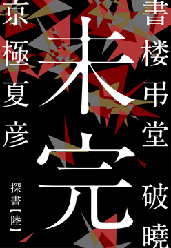

| 『書楼弔堂』シリーズガイドブック (集英社文芸単行本) | |
| 京極夏彦 | |
| 株式会社 集英社 (2016) | |
集英社 ｅ文芸単行本
『書 楼 弔 堂 』シリーズガイドブック
この本は縦書きでレイアウトされています。
また、ご覧になる機種により、表示の差が認められることがあります。
もくじ
〝読む〟という行為の醍醐味
虚と実のはざまに生まれる物語
著名人が来店!?
『書 楼 弔 堂 破 曉 』人物紹介
月岡芳年、泉鏡花、井上圓了、勝海舟、ジョン万次郎......。
弔堂には様々な客が訪れる――。
高 遠
「勉学の徒ではないのです。思想もなければ主義もない。至って卑俗な凡夫ですよ」
――幕臣の嫡男で、父親の縁故で煙草の製造販売業に就くも病気療養を理由に休職。妻子を屋敷に残し、親の遺産で食い繫ぎながら勝手気ままな一人暮らしをする35 歳の男。
弔堂主人
「書物と申しますものは、それを記した人の生みだしたまやかしの現世、現世の屍なのでございますよ」
――元僧侶だったが還俗して古本屋に。「当て推量」と言いながら、探書に訪れる者たちの心の奥を鋭く見抜き、それぞれの人生にふさわしい一冊を探し当てる。
撓
「どのご本も、どの刷り物も、読み返したところで如何にもなるものではございますまい」
――書楼弔堂の小僧。女児と見紛うばかりの美童で、神社の稚児のような気品が漂う。店主同様年齢は不詳だが、蔵書に詳しく、機敏に仕事をこなし、時には憎まれ口を叩く。
泉鏡花
「師、尾崎紅葉の著した『二人比丘尼 色懺悔』で、小生 は文字の力、言葉の力、文章の力、小説の力を思い知りました」
――のちの幻想文学の大家。金沢に生まれ、上京し、尾崎紅葉の弟子となる。繊細で神経質。著作に『高野聖』『婦系図』『歌行燈』等がある。
井上圓了
「瓦斯燈は夜道は照らすが迷信を照らしてはくれない」
――新潟生まれの哲学者で東洋文明は仏教の中にあると主張。迷信はびこる明治のの世で真の近代国家を目指し、哲学館を設立。迷信打破のため妖怪研究を行った妖怪学の第一人者。東京・中野に哲学堂をたてた。
巖谷小波
「私は後ろを向いております。後ろと云うより、過去に遡るかのように、現実から逃避しております」
――東京の生まれ。『こがね丸』を発表して、児童文学の先駆者となった。裕福な家庭に育ち、無意味非寓意な物語を好んで描いた。また日本へ世界各国の童話も紹介した。
岡田以蔵
「天誅と云うとったが、能く考えれば目 明 だの、幕府への内通者だの、邪魔な連中を消しただけじゃき」
――土佐の生まれで、尊皇攘夷の志士として、佐幕派への天誅を繰り広げ、「人斬り以蔵」と恐れられた。土佐藩の手で打ち首獄門となった幕末の暗殺者。
勝海舟
「夢でいいんだよ。叶わねえから夢なんだが、夢でも見なくちゃ大望は果たせねえ」
――伝法だが義俠心に厚い江戸の人。蘭学、兵学に通じ、咸臨丸で太平洋を横断。江戸無血開城を実現させた御一新の立役者で新政府の枢密顧問官。窮する幕臣には援助を惜しまない。
月岡芳年
「臨終のその前に、読む本を売って呉れ」
――明治の時世にあった新しい浮世絵を作ろうと研磨した最後の浮世絵師。幕末、歌川国芳に入門し残虐な血の絵で名を成すが、強度の神経衰弱に。歴史画を学び、洋画の手法にも挑戦、多様な画風を展開させる。
中濱萬次郎 （ジョン万次郎）
「漁師じゃからな、お武家さんのような意地も誇りもない。大義も名分もない。生き意地汚う生き延びただけのことじゃ」
――天保年間、出漁中に遭難、アメリカの捕鯨船に救助され、渡米した。帰国後、幕府、そして新政府に出仕し、日米和親条約の締結に尽力。
インタビュー
京極夏彦 『書 楼 弔 堂 破 曉 』
〝読む〟という行為の醍醐味
時は明治二十年代半ば、直参旗本の家に生まれた高 遠 は、父の縁故で勤めた会社も士族の商法で左前。病を得たのを機に、休暇と称して無為な日々を送っていた彼は、近所を散策中、一軒の本屋に巡り合う。店の名は「書楼弔堂」。街燈台のような異様な建物の中には、夥しい数の古今東西の珍本奇本、稀 覯 本が収められている。店の主は、客にとって大切な本を探してあげるのを己の使命としており、高遠もひょんなことから〈探書〉の手伝いをするようになる。店を訪れる客は、月岡芳 年 、泉鏡花、井上圓 了 、勝海舟、ジョン萬次郎......。江戸と明治の端境期に生きる彼らは、何を求めてここへやってきたのか......。
京極夏彦さんの最新刊『書楼弔堂 破曉』は、このユニークな本屋を舞台に明治という変わりゆく時代を生きた人々の姿を描いた新シリーズ第一弾です。刊行にあたって、京極さんに本作に込めた思いなどを伺いました。
聞き手・構成＝増子信一
江戸と明治の端境期
――今回の舞台になっているのは明治二十五（一八九二）年から二十六年にかけてですが、最初のほうで弔堂の主人がこんなことをいっています。
《書き記してあるいんふぉるめーしょんにだけ価値があると思うなら、本など要りはしないのです。......本は内容に価値があるのではなく、読むと云う行いに因 って、読む人の中に何かが立ち上がる――そちらの方に価値があるのでございます》
電子書籍という新たな本の形態が出てきている現在、この言葉は本というもの、あるいは本を読むことの本質とは何かを改めて考えさせます。
本に書かれている情報、内容だけが大事なんだというようなことをおっしゃる方は昔からいます。一方で、本を骨董的なもの、あるいはコレクターズアイテムとして扱う人もいる。ぼくは個人的に、どっちもＮＧなんです。
電子書籍は今でこそ普通になりましたけど、ちょっと前までは珍しかったせいか、テキストを配信するだけで金が取れるんだと勘違いする愚かな作り手も多かったですね。価値があるのはテキスト＝情報であって、書籍に価値があるのではない、ということですよ。でも、それは大きな錯誤です。売れるのは小説そのものじゃなくて商品としての本です。本を売るために編集者や出版社がどれだけ努力しているのか。間違いを減らすために校閲の人が一所懸命ゲラを読む、読みやすい書体を選ぶ、めくりやすい紙を選ぶ、手に取ってもらえるような装幀をする......そうやって商品としての本を作っているから読んでもらえるのであって、むき出しのテキスト・データがそのままあっても、読んでもらえないですよ。
一方で、ガラスケースに稀覯本を並べて、温度・湿度管理を徹底して、取りだす時には手袋をするようなコレクターもいるんですね。家族は困るわけです。お父さん寒いよ、暖房入れてよと（笑）。それも違う。本はあくまでも読んでなんぼ、のもんです。たとえ百万円だろうが十円だろうが、買っちゃったら自分の本だし、なら読もうよと。読まない限りその本には何の価値もない。
内容や情報にだけ価値があるわけではないんだけど、物として捉えるだけもいけないんだと思う。じゃあ、本とは何なのかということになるんですけど。結局、「読みたくなる／読む」ことこそが大事なんですよね。情報が大事なんじゃなくて、情報から何を酌み取るのかが大事なんであって、そのためには読むという行為が欠かせない。読者なくしては成り立たないものです。本は、「読んでもらうため」の装置なんです。電子だろうが手書きの写本だろうがそこは変わりがない。出版社をはじめ多くのスタッフが関わることでその装置はでき上がってる。だから本当は、編集から校正、印刷、製本に至るまで、本を作るのに携わった人全員の名前を映画のスタッフロールみたいにカバーに並べたいくらいです。ちょっと無理なので、代表としてぼくの名前になってますけど、「ぼくの本」という意識はない。ぼくは本作りの一スタッフにすぎません。
現在の本を取り巻くそういう仕組みは、一朝一夕にでき上がったものではないんだけど、ずっとそうだったわけでもないですね。出版社が本を作り、取次が日本全国に配本し、発売日には書店さんがいっせーのせーで売るのは、当たり前のようなんだけど、このシステムができたのはさほど古いことではなくて、江戸期の流通の仕組みから転換したのが、ちょうどこの明治の中頃なんです。今、電子環境の進歩普及に則して書籍のあり方が大きく変わりつつあるわけだけれど、明治期にも大きな転換があったわけです。本を「買う」こと、それに伴って「読む」という行為自体の意味が変わったという点においては、その時の方が変化は大きかったようにも思います。
――この明治二十六年に、出版法が成立しています。出版にとって大きな端境期だったと思いますが、翌年には日清戦争が始まり日本社会全体が大きく変わっていく。江戸と明治が交代していく微妙な時期でもありますね。
まさにそうなんですね。戦争みたいな国家的大事が起こると、経済の仕組みも大きく変わるし。技術革新も起きる。そうなれば、社会も文化も影響を受ける。一人一人の懐事情も大きく変わるわけですし。まあ、今の状況と似ているのかもしれません。最初は、現代と明治二十年代との類似点なんてまったく眼中になかったんですけど、書き進めると結構近い気がしてくる。いや、ただ「人はそんなに進歩しないもんだ」ということなんでしょうけど。
時代の流れに乗れない主人公
――そうした大きな変化の時代にあって、視点人物として狂言回しの役を担う高遠は、時代の流れにまったく乗れないというか、乗っからない人物です。
いつの世の中でも、時代の最先端にするすると乗っちゃう人っているのだけれど、そういう人にはあまりシンパシーを感じないんです。大方の人は、乗りたいとは思っていても、乗り損ねたり、乗ってもすぐに落ちたりしてしまうわけですね。あるいは乗った気になってるだけ、とか。
ここには六つの話が入っていますが、最後、「未完」という話で終わるわけです。人間というのは、しょせん未完なんですよね。人はよく、区切りをつけるためにゴールを設定したがるでしょう。で、そのゴールに達すると「終わり」と思っちゃうんだけれど、終わらないですね。いくらすごいイベントがあっても、次の日に起きて何か変わってるかといったら、何も変わっていない。
主人公がドラマティックに時代に翻弄され、見失ったものを見つけ、昨日までの自分と決別して果敢に時代に立ち向かっていく――とか、ありますね、そういう物語。カッコいいじゃないですか。でも、現実にはないです。偉業を成し遂げたような人も、それは後世の評価なのであって、喰って寝てる日常はおんなじですよ。だから、いろいろな人と会って、いろいろなことを考えるのだけど、結果的にどうにもならない、成長もしなければ進化もしないし、学習もしない。そういう主人公にしたかったんです。
結果は何にもならないのだけれど、でも、経過自体はおもしろい。ぼくはそれがエンタテインメント小説なんだと思うんです。極論をいえば、結末なんかどうでもいい、なくてもいいと思うんです。蜿々 と読む快楽だけがあるというのが理想です。以前、筒井康隆さんがおっしゃったんですが、「おもしろいことを考えて、思いつかなくなったらやめればいい。おもしろいのはここで終わりですという終わり方でもいいんじゃないか」って。そのとおりだと思う。この『書楼弔堂』も全然波瀾万丈じゃない。スペクタクルな展開もなければ、ミステリアスな謎があるわけでもない。本屋に客が来て帰るっていうだけの話です（笑）。そういう意味ではぼくの小説観のアナロジーみたいな小説でもありますね。
ぼくは、本を読むと人生が楽しくなる、とは思うんだけれど、マシな人になるとか賢くなるとか、そうは思いません。「読んでいる間はおもしろい」だけのものだと思います。この高遠も、本を読むのをおもしろがっているんだけれど、読んだことで何かが血肉化することは一切ないようです。世間的にはダメな人間ですよね。奥さんも子供もほったらかしで、働かないで朝から晩まで寝ている。社会不適合者じゃないですか。
それはまあいけないんだけど（笑）、たとえば偉人だろうが犯罪者だろうが人格者だろうが性格破綻者だろうが、本を読んでいる間はみんな「本を読む人」に過ぎないわけです。読書って能動的なものだから、読んでいるなら、その人の気持ちは必ず本に向いているわけで、何を感じたとしても、それは本から感じたものですね。そう考えると本ってすごい装置ですよね。しかも、同じ人が同じ本を読んでも、そのときの心持ちによって立ち上がるものは違う。人間がつくった数々の娯楽装置の中でも、かなりユニークなものだと思いますよ。
一方で、本を読んでも腹はふくれないし、本を読んで金をもらえることもない。書評家は別ですが。だから本を読む時間ってすごく無駄なんです。無駄なんだけど、その間だけ幸せになれる、あるいは不幸せになれるのでも構わないんだけど、いずれ平板な日常に起伏はできるわけでしょ。そこが大事なんです。こんなおもしろい装置を使わないのは損だと思いますね。
巖 谷 小 波 は元祖アニオタ
――最後の章「未完」を除いて、実在の人物が登場します。泉鏡花、井上圓了、巖谷小波、勝海舟、月岡芳年、ジョン萬次郎......。それぞれが弔堂を訪れて、巡り合うべき「大切な本」を主人から薦められます。
弔堂が薦める本というのは人生の転機になるべき本であっては「いけない」というのを、最初に決めたんです。それを読むことによってがらっと人生が変わってしまったとか、その人の考えが変わってしまったというようなものではなくて、その人自身はずっと変わらないんだけど、その変わらない人と伴走する、変わらなくていいんだよということを保証するような本を与えるべきだろう、と。
本を読んで人間が変わって、昨日までだらだらしていた人が勤勉になったとか、ギャンブルをやめたとか、お酒をやめたとかいう話になると、ただの道徳的な寓話になってしまう。お酒を飲んでぐだぐだしてる人は、お酒飲んでぐだぐだしてることを保証してくれるような本を探しているわけで（笑）、それこそがその人の大切な本になる。
たとえば、巖谷小波という人は、全国を渡り歩いてお伽噺を語るお爺さんというイメージが強いんだけれど、この明治二十五、六年の頃の彼は、失恋に悩む純情なお金持ちの御令息ですね。お伽噺を語るお爺さんとブレイクハートのお坊ちゃまでは相当イメージ的に乖離しているわけですが、これは地続きのはずなんです。どっかで変わっちゃったわけではない。一本線を通すなら、それは何だろうと。で、ものすごくざっくりと、わかりやすく言うなら、まあオタク的要素なんじゃあなかろうか（笑）。繊細で傷つきやすい潜在的アニオタ（アニメが大好きな人）と仮定してみたらどうか。怒られそうですが。三次元の女の子との付き合い方はイマイチわからなくって、フラれて傷つき、でも二次元に逃げ込むのは逃避だと思ってしまう。「いけない、ぼくはこんな年齢になってアニメなんか......」とか思い悩む。そこに「いや、いいんだよ、アニオタとして生きればいいでしょう」と囁かれてしまう（笑）。そこで、新機軸のアニメを自ら作り、世界中の人に、「アニメはスゴイ」と発信しつづけるアニメ伝道おじさんになる。それだと一本筋が通るじゃないですか。やっぱり怒られそうですが。
本を読む行為って「自分を読む」ということですね。肯定するにしろ否定するにしろ。それって自分探しとか自己啓発とか、己を知るとか、そんなもんじゃないんです。何か得るものがあるとすれば、今のままでいいじゃん、ということを保証するような、だらしないもんだと思いますけど。
――今回は「破曉」、まだ一日が始まったばかりの明け方ですが、続編を予定されているのでしょうか。
単行本化が視野に入った段階で、このまま雑誌掲載を続けるかどうか担当編集者や編集長に打診してみたんです。ぼくは一巻、二巻というスタイルが苦手なんで、単発で終わるなら弔堂を火事にしちゃうとか、まあ終わる話にしなきゃならないし、もし続けるなら何か考えなくちゃいけない。で、続けてくれというので、まあ火事はナシだなと。ただ大きな構造は考えなくちゃいけなくて、春夏秋冬のようなものに仮託するというのを考えたんですが、よい言葉がない。で、朝、昼、夕、夜で構成してみたんですが、それって四冊かよと後悔しています（笑）。次のシリーズはスタイルは同じですがレギュラー客が替わって、かなりフェミニンな感じになるかと思います。開始時期は決めてませんが、その時はよろしくお願いします。
「青春と読書」二〇一三年一二月号より
［１］丸善の二階
大政奉還からまもない明治２年、横浜に丸屋という書店が開業しました。創業者は早矢仕有的（はやしゆうてき）、医師ながら実業の才があり、丸屋善八の届出名から丸善と呼ばれたこの店は、薬と洋書を扱って評判をとります。
丸善はほどなく日本橋に支店を出しますが、物理学者の寺田寅彦はその二階の洋書売場が、自分にとって特別な場所だったと記しています。西洋の知識にならうこと、すなわち洋書を読むことが学問であった文明開化の時代、ガラス扉のついた書棚の奥に異国の本がならぶ丸善の二階は、さしずめ最先端の情報センターのようなものだったのでしょう。
ただしこの「丸善の二階」は、誰もが気軽に入れる場所ではなかったようです。このころの本屋といえば、ほかの商店と同じく畳敷きで、背表紙のない和本の多くは棚に積まれているのが普通でした。いまのように客がじかに本を手に取るのではなく、店の者が出してくるのを待つのです。
西洋式の店舗に建て替える前の丸善も、例外ではありませんでした。本を選ぶには知識が必要です。どのような分野があって、何が論じられているのかを知らなければなりません。外国語で書かれた本となればなおさらです。二階にあがり、ならんだ本の中からほしいものを選べるのは、そうしたことに慣れた西洋人や、寺田のような帝大生に限られたといいます。丸善のような店は、東京でも特別な本屋だったのです。
［２］本と本屋の諸相
ではごく普通の人たちは、どこでどのような本を手に入れていたのでしょうか。
和本には、「物之本」という固めの本と、読みものや絵草紙のような軽い本がありました。日本の出版はもともと上方が主流で、江戸の出版は18 世紀の後半ごろ、京都や大阪の本格的なものとは区別して、地本と呼ばれました。
本を売る店は各地に存在しましたが、とりわけ軽い草紙類などは、小間物屋の店先や行商の薬屋、貸本屋などを通じて流通していたことが、明らかになっています。地本の一種である絵草紙には、こども向けの絵本など冊子になったものもあれば、各種番付、すごろく、役者や力士、風俗や事件を描いた錦絵のように一枚刷りのものも含まれました。こうした庶民的な出版物は、町中であれば、明治20 年代ごろまで、縁日や交通の要所、そして絵草紙屋などで売られていたようです。
錦絵のように綴じていないものを「本」とよぶのは意外かもしれませんが、「本屋」が意味するところもまた、いまとは異なっていました。たとえば作り手が自分の本を売るのは自然なことで、印刷・製本と出版、小売が合体した「本屋」は珍しくありませんでした。他方で、もっぱら人の本を請負う者もありましたし、卸売と小売を兼ねる業者もいました。中には「せどり」といって、店をもたずに本屋の間をつなぐ個人営業も存在しました。この時代、とりあえずは本にかかわる商売全般が「本屋」であり、書籍商だったのです。
［３］新旧の取引
本屋の中には、もちろん古本屋も含まれていました。丸善と同じ年に生まれ、古書肆・二三屋書店を継いだ岩本米太郎は、古本を商いながら出版を始めた父の商売を、次のように説明しています。
親父などは明治二年に自分の出版物を携え、上方へ参りまして、本替ということを致しました。此方から新しいものを持って参りまして、それを上方の本屋へ売り、向うの古本を金の代りに取ります。新古本交換でございます。（中略）本の宣伝の機関というものもございませぬ。ですから自分で出向いて、あっちへも広め、こっちへも広め、いわゆる本替本替で、多く捌いて参ったのでございます。（反町茂雄編『紙魚の昔がたり 明治大正篇』八木書店 より）
岩本の回想は、東京で本を作った青年が大阪の本屋と取引し、そこで出回っている古本と自分の本を物々交換して、本を広めていった様子を示しています。古本と新本は、明治16 年に古物商取締条例が出たことによって、少しずつ分かれていくことになりますが、兼業する本屋は珍しくなく、区別もあいまいでした。そして同時に本の流通は可能な範囲にとどまり、どこの本屋でも同じ本が並んでいる、というわけではなかったのです。
丸善の二階には洋書が並び、巷では軽い絵草紙や読みものが売られる。本屋には古本も新本もあり、その種類は場所によって異なっていました。さらに学校が整うと、医学書や法律書、初等教科書などを発行する近代的な出版社も登場、洋装の本も続々と出版されるようになりました。明治20 年には、近代最初の本屋の同業組合ができますが、以前からの本と新しい本、昔ながらの商売と維新の事業とが混ざりあうさまは、組合名簿の中にも色濃くあらわれています。
［４］博物館の登場と近代化
そのころ日本の本の世界には、もうひとつの新しいメディアが浮上していました。雑誌です。近代の申し子ともいえる雑誌界をリードしたのは、長岡出身の大橋佐平が明治20 年に創業した博文館でした。新聞とともに、言論ジャーナリズムとして西洋からもたらされた雑誌は、明治のなかばあたりから急速に読者層を広げ、日清・日露の戦勝も加担して、出版のメインストリームに躍り出ます。
わずかの間に人気雑誌を続々と刊行、またたく間に市場を席巻した博文館は、販売にも大いに力を入れました。そのひとつが明治23 年に開業した小売書店、東京堂です。いまも神田神保町のすずらん通りにある東京堂書店は、作家や著名人にファンが多いことでも知られています。
また博文館は、雑誌販売の拠点として各地の大きな本屋とも直接取引し、仲卸のような役割を担わせていました。小売部の翌年、東京堂は卸部を設けてこれを組織化し、他社の雑誌を博文館のルートに載せました。この東京堂卸部は、雑誌を全国に一斉に流通させるというインフラを担うことで、やがて近代出版業界の中心的な存在となります。そして、明治期の本屋の混沌とした状況もまた、こうした産業の近代化の中で、変態をとげてゆくことになるのです。
柴野京子 略歴
上智大学文学部新聞学科助教。早稲田大学卒業後、出版取次会社に勤務。２０１１年、東京大学大学院学際情報学府博士課程単位取得退学。同大学院人文社会系研究科特任助教を経て、２０１２年より現職。主著に『書棚と平台――出版流通というメディア』『書物の環境論』（いずれも弘文堂）。
『書 楼 弔 堂 破 曉 』 試し読み
集英社 ｅ文芸単行本
書楼弔堂 しょろうとむらいどう はぎょう 破曉
京極夏彦
書楼弔堂 破曉
探書壱 臨終 りんじゅう
葉桜は夏の季語だそうだ。
道の両岸の桜樹の繁り具合は真 に旺盛である。
青 青 と誇らしく繁り、もう葉桜と呼べるような状態 ではないが、まだ世間は暑くはない。夏までにはまだ間がある。過ごし易いと云えば聞こえは良いが、天候が不順なだけなので、気が晴れることは殆 どないのである。
鈍 鈍 と漫 ろ歩きで幅広い坂を下ると、手 遊 屋 が一軒ある。
何度通っても唐突な感を覚える。景色に馴染んでいない。それでも客は来るようで、店先にはいつでも親子連れが一組二組はいるのである。
今日も、七歳 か八歳 くらいの学帽を被った洟 垂 れ小僧が、加 藤 清 正 の仮面 が良いと駄 駄 を捏 ねている。母親は金 太 郎 の方が良いと云っているようである。売り手の親 爺 は、鉄砲だか洋剣 だか上等の玩具を売り付けようと、あれやこれやと売り文句を投げ掛けているが、親は聞く耳を持たぬようである。
店主は児童 の顔色を窺い、洋剣を提げるなら清正の方が断然似合いまする、残念乍 ら鉞 はございませんしなあと、妙な口上を述べている。合わぬと云うなら何方 にも合わぬ。洋剣を提げた清正公の方が余程滑 稽 な絵 面 である。そんなもので虎退治など出来るものかと思う。虎退治なら片 鎌 槍 だ。そもそも清正だろうが金 時 だろうが面は面、値は変わらぬのだろうし、この親は何故に清正を嫌うものか。いっそ、ひょっとこの面にでもしろと、通り過ぎ乍 ら思う。
手遊屋を遣り過ごし、暫 く進むと横 径 がある。
越して来てから三 月 、この大 路 は能 く通るが、横径に這 入 ったことはないから、先に何があるのかは知らない。
息が切れたので径の入り口で立ち止まり、その先に顔を向けると、何 処 かで見掛けたような人影がせっせと近付いて来るのが見えた。袢 纏 を着込み、ハンチングを被り、背負 子 のようなものを担 いでいる。
ハテ誰だったかと目を凝 らせば、四 谷 の書舗 の丁 稚 小僧である。名前は慥 か為 三 とか云ったと思う。こちらに気付かず通り過ぎようとするので、為さん為三と声を掛けてみた。
案の定振り向いた。
印半纏には交差した斧の絵印が付いている。斧 塚 書店の商標である。
為三は首だけ振り返った恰 好 のまま、目深に被っていたハンチングを右手の人差指で一寸 押し上げて、眼を円 くし、おやまあ旦 那 さんと云った。
「こんな処で何をしていらっしゃる」
「何をしていらっしゃるじゃあない。僕はこの先に住まっているのだ」
そうでしたかいと丁稚は驚き、身体 を返して向き直った。
「でも、高 遠 の旦那さんは、紀 尾 井 町 だか一 ツ木 だか、あっちの方のお屋敷にお住まいだったのじゃなかったですか。以前に掛け売りのご集金に伺った覚えがございますけれど、手前の覚え違いでございましょうかな」
「いや、三月前に越したばかりさ。なァに、疾 の療養だ」
おやまァご病気でしたかいお見舞い申し上げますと為三は大袈裟に云った。
「大層なものじゃあない。微熱が続いて咳も出る。もしや癆 痎 かと怪しんで、医者に相談する前に閑居を探して移ってしまったんだ。家族に伝 染 しちゃア大ごとだと思ったのさ。だから屋敷はそのままある。母も妹も、妻子も彼処 に住んでいる」
為三はおやおやそりゃいけないと云って、手で口を覆った。
「そう心配することはないよ。感 染 りゃあしないから。なァに、蓋を開ければ只の風 邪 だったのだ。風邪を押して引っ越しなどしてしまったものだから、却 ってこじらせてね。治るのに半月もかかったが、今はもう何処も悪くない。悪くはないが、独り暮らしも悪くない。折角借りたのだし、暫く住んでみようと思ってね」
「はあ。お仕事は」
「半年ばかり休暇を貰った」
ひゃあ、と為三は声を上げる。
「そいつはいいご身分だ。流石 にお大 尽 は違いますねえ。豪 儀 だ豪儀だ。あやかりたいですな」
「そんな良い身過ぎじゃないよ」
多分、仕事に戻ることは出来ないのである。辞めると云えば角が立つ。だから休むと云っただけだ。向こうも無駄飯喰らいがいなくなれば楽にもなるだろうから、止めることはなかろうと思ったのだが、思惑通り止められることも、咎 められることすらなかった。
経営が苦しいのだ。
勤め先は将 軍 煙草商会と云う。大層な名前だが、煙草の製造販売業としては後発の、小さな会 社 である。
休む間禄は要らぬと云った。元の主 筋 の嫡 子 として特別扱いを受け、それなりの給金を貰っていた身であるから、少しは資金繰りの足しになるかとも考えたのだが、それでもその程度では焼け石に水、半年保 つとは思えない。所 詮 士族の商売 は付け焼き刃、上 手 く行く訳もないのだ。
「父上様の縁故で採用して貰ったがどうにも肌に合わない。そもそも、天 狗 の赤と村 井 の白に挟まれて、まるで源平の合戦に交じり込んだ漁民の体 だ。あんなえげつない宣伝など思い付かぬし、思い付いたって出来やしないのさ。うちの煙草なんざ、サッパリ売れないのだ」
これからは宣伝ですかねえと丁稚は解ったような口を利く。
「将軍印煙草は旨 いですがな」
「まあ、岩 谷 天狗は薩 摩 、サンライスの村井は本拠が京都だ。それに引き換え、僕の雇い主は駿 河 の出だ。将軍と云うのは権 現 様のことだからね。所詮官軍には敵 わないさ」
お江戸は遠くなりにけりですなあと為三は更に解ったような口を利いたが、この小僧は未 だ十七八なのだから、御 一 新 前のことは知らない筈 だ。
「まあ、これを機会に身の振り方を熟慮しようと思っているのさ。幸い、親父様の遺してくれた財産があるので、半年喰い繫ぐくらいの余裕はあるのだ」
それが豪儀だって云うんですと為三は云う。正にその通りだろうとは思う。
「手前どもなんか喰うや喰わずで。両の手の爪全部に火ィ燈 して、働き詰めです。親方ァ怖いしね」
「それよりお前さんはどうなんだ。その怖い親方に叱られて逃げて来たのかね。それとも、こんな人 気 のない処にお得意様でもいるのかね。狸 くらいしか棲 んでいないのじゃないか」
だから越して来たのだ。
帝都の内とは云うものの、それも名ばかり、雑木林と荒れ地ばかりの鄙 である。人家がないと云う訳ではないけれど、凡 そ書物を買い求める類 の人間が暮らす場所とは思えない。
為三は丸顔をくしゃくしゃにして、セリマンでござんすよと云った。
「そりゃあ何だい」
「いやですよ旦那。本探しですわ」
「本は店にあるだろう。何を探すのだ」
旦那等 が注文するじゃあないですかいと丁稚は困り顔で云った。
「そりゃあするけれども」
「うちは、元元本草系の版元ですわ。江戸の頃からそうだったんで、今だって刷ってるのはほれ、植物やら農業やらの本じゃないですかい」
「まあそうだな」
「でも、旦那もそうですが、何でも彼 でも注文するじゃあないですか。うちが出してる本の他にも、あれは如 何 したこれを呉 れと、ご注文になるでしょう。他の版元の本だって買うじゃないですか。うちは洋書は扱ってないですが、洋書の注文もあるんですわ」
それはそうである。
「云われるまでそんなことは考えてもみなかったがな、そりゃあ慥 かにそうだ。全体どうしていたんだ」
「版元さんに仕入れに行きますのです。まあ、医学の本なら南 江 堂 さん、漢書なら松 山 堂 さんと、それぞれお得意分野がござんしょうよ。そう云うところに話をつけて在庫があれば分けて貰いますんで。彼 方 此 方 廻って、取り次ぎますんで」
「ほう。そう云う横の繫がりがあるのだなあ。考えてみれば当たり前だね。そう云えば、組合も出来たのだろう」
何年か前に書籍販売組合のようなものが出来たんだと云う話を、斧塚の主人に聞いた覚えがある。
「へえ。丁稚の手前にゃ難しいことは判りませんが、そう云う取り次ぎ仕事が新聞みたいな仕組みになりゃあ、まあ楽になるんでしょうけどねえ。今はね、まだ手前達丁稚が取り次いでますからね。注文されたら草 履 磨り減らして東京中駆け廻って集めますんで。それがまあ、セリマンで」
どう云う意味なんだと問うと、それは存じませんと丁稚は答えた。
「まあ、大変です。辻馬車も人力も使えませんからね。俥 代 なんざ一銭も貰えませんや」
足が頼りだと丁稚は足踏みをする。
「また、最近の本は重いですからねえ。時に横浜だのまで行くんですわ。横浜は歩いちゃ行けませんけど、それだって、汽車賃は本の値段に乗せられませんからねえ。損です」
「上乗せすればいいじゃないか。手間賃という奴だ」
「いやいや、あっちで十銭、こっちで十銭五厘 じゃあ如 何 にもいけないでしょう。新聞だの手習いだのは、全国何処でも同じ値段で売ってるじゃあないですか。本だけそうはいかないってのはねえ。お客にしてみりゃ間尺に合わないって話で」
「そうだがなあ。まあ、だから組合も出来たんだろうし、変わるだろこれから」
色色変わる。
文明開化とやらも、開くのだか化けるのだかは知らないが、もう開化してから二昔をずっと越し、子供の頃に見ていたような風景は既 に何処にもない。いつの間にか異国のような景観ばかりになっている。
「偉い人が考えてくれているのだ。お前さん方が草履を減らすような商売 の仕方はやがてなくなるだろうよ」
そうですかねえと為三は桜を見上げた。
「でもねえ旦那、絵草紙やら赤本やら合 巻 やら、潰れちまった本屋の本やらね、昔の本だって欲しがるご仁 はたんといますからねえ。そう云う場合は、やっぱり手前等が走り廻ることになるんで。取り次ごうにも何処に取り次いだもんだか判りやしないですからねえ」
「あ、そうか」
書籍は、大根だの人参だのと違って、幾らでも作れるものではない。版がなくなれば刷れぬし、版元が潰れても刷れぬ。数に限りもあるだろうし、必ず手に入るとは限らないものだ。
「まあそうだな。考えてみれば古本と新本は――別か」
本は本だと思っていた。
へい、別で、と丁稚は答えた。
「別になっちまったんだと、親方は云いますがね。版元と小売りの商売 も別だそうですし」
「なる程なあ」
豆腐屋のように、作って売って、作って売ってと云う訳にもいかないのか。
「はあ。刷って集めて、卸して配って、それで売ると、まあそう云う分業の仕組みになるんでしょうな、いずれ」
「それは新しく刷る本の話だね。古い書物はそうはいかないのか。なる程なあ」
道端で小僧に色色教わっている。
そう思うと少し愉快だった。
「で、何だ。お前さんは狸の書いた葉っぱの本でも取り次ぎに来たのかね」
そう云うと、でへへ、と為三は品のない声を上げて苦笑いをした。
「何だ、本当にそうなのか」
「いや、狸かもしれませんがね、知りませんか旦那。その先の」
為三は径の先を指差した。
「本屋」
「ほんやだと。こんな場所に書舗 があるのかい。何を刷ってる本屋だね」
「いや、版元じゃあなく本屋です。本屋と云っても、まあ、何とも変な本屋でしてね、色色と面倒臭い品のご注文があった時は、お世話になることにしてまして」
「面倒臭いと云うのは」
為三は背負子を下ろした。
「まあ、こう云う」
丁稚は背負子に括 られた風呂敷包みを示した。
「何処も扱ってないような本で」
「風呂敷越しじゃ判らんよ」
「へえ。独 逸 の何とか云う団体の出した小冊子だとか、越 後 の好 事 家 が江戸の頃に書いた備忘録の写本だとか、聞いたことのないようなお経の本だとか」
「ほう――」
そんなものが置いてあるのかと尋 くとありましたねえと丁稚は答えた。
「当たり前には取り次げないような本でござんすよ。最近じゃ珍本奇本、稀 覯 本 とか云うようですけどもね、そう云う値の張るようなもんじゃあない、屑みたいなもんもちゃんとある。ですからさっきの話で云うと、古本と云うことになるんですかね。古本屋ですかね」
「古本屋なあ」
顔を向けたが、桜の樹しか見えない。
「ま、手前等 みたいな書舗 の丁稚には有り難い話ですわ。注文受けても、ないもんはない。でも其 処 にゃあ」
「大概あるか」
「ありますなあ。ご亭主は偏屈そうですが怒られることもないですし」
「そうか。本屋があるのかね」
この径の先に。
「失礼ですが、旦那さんは本の虫みたいなお方ですから、当然知っていなさるかと思いましたがね」
「知るものか。最初の一 月 はずっと床に伏していたのだ。近所の百姓家の嬶 におさんどんを頼んで、ずっと寝ていた。床を上げてからも医者通いだ。まあ杞 憂 だったのだが、何ともないと診断されるまでは心配だろうよ。だから普通に暮らし始めたのはついこの間でね、散歩なんかは今月になってからさ」
医院へ通うためこの大路は幾度も通ったのだが、それにしたって看板のひとつもないのだから知りようもない。
「いや、この細道は、ずっと行くてえと畑がありまして、それでドン突きはお寺ですよ。門前には花屋だの餅 屋 だのがありますが、途中に店なんざそうない。だから、見 栄 えは悪いが、参道なんでしょうなあ。その参道の途中に、ぽつんとね」
「あるのかね」
「へえ。三階建ての、燈 台 みたいな変 梃 な建物ですよ」
「三階なのか」
妙な本屋もあったものである。
「上の方に昇ったことなんざありませんからね、一体如 何 なってるのか判りませんけどね」
「そこはその、気難しい感じかね」
「さあねえ。垣 根 が高いてぇ気はしますが、別に取って喰う訳じゃありません」
「お前さんみたいな商売人ばかりかい」
そんなこたぁないでしょうやと丁稚は云う。
「まあ銀 座 辺りの唐 物 屋 なんかよりはずっと入り易いでしょうな。小難しい本もありますけどね、最近の雑誌なんかもあるし、普通の客もそこそこ来ているでしょうな」
「そうかい」
それなら行ってみずばなるまい。
行くんですかと丁稚が問うた。まあ行くさと答えると、オヤしまったなどと云う。
「何がしまっただ」
「旦那さん、うちの店においでにならなくなっちまうでしょうや」
「まあ、近いしなあ」
おいら叱られちまいますと為三は口を尖らせた。
「旦那さんお得意だから」
「いや、お前さんがご主人に云わなけりゃ知れることじゃあない。僕からわざわざご注進に及ぶこともないさ。まあ、仮令 ご主人に知れたとしたって、お前さんに聞いたたァ云わないから案ずるこたァないよ。それにね、四谷に出た時は必ず寄せて貰うから、ご主人に宜 しく伝えておくれ」
へい毎度ありと為三はハンチングを取って頭を下げ、被り直してからよいしょとばかりに背負子を担いだ。
これから歩いて四谷まで帰るのか。
それなら日も暮れてしまうだろう。荷も重いのだろうし、何だか可哀想な気もする。結構しんどい渡 世 ではある。立ち話で随分と時間を取らせてしまったし、これで親方に文句でも云われたりしたら夢見が悪い。
そう思ったので、再度呼び止めて僅かばかり駄賃をあげた。
為三は甚 く喜び、何度も礼を云って、跳ねるようにして手遊屋の前を過ぎて去った。
姿がすっかり見えなくなるまでその背中を眺めて、もう一度径の先に視軸を投じてみた。
寺も何も見えはしない。横道は細い上に曲がっているのだ。
行ってみようと、そう思った。
どうせ暇なのだ。
その点に関しては高等遊民とでも呼びたくなる程に優雅なのである。
まあ高等でも遊民でもなくて、どちらかと云うと人間は下等の部類であるし、ただ仕事に溢 れているだけの身でしかないのだが、それだけに時間だけは売る程にあるのである。
径に踏み込む。
山 萩 が咲いていた。随分と早咲きである。
上だの遠くだのばかり見ていたから、足許は見ていなかったのだ。綺麗なものである。
半町も進まぬうちに景観はすっかり田舎 びてしまった。古びた道祖神 でもあればもう山村の相である。
右方の木木が途切れて畑が広がる。畑の向こうには百姓家がある。江戸の情緒なんぞは微 塵 もないが、文明だの近代だのの欠片 もない。何の畑か知らないが、そんなに土地が肥えているとも思えなかった。
畑がまた樹木に隠れて見えなくなる。
納屋だか小屋だかがぽつぽつと木陰に見え隠れしている。
突如赤いものが目に飛び込んで来たので一瞬ぎょっとしたのだが、ちゃんと見れば夾 竹 桃 である。今日は能 く能 く花を見掛ける日だと思い、見 蕩 れつつ足を運び、おやと思って左手を見れば、建物がある。
遣り過ごすところだった。
立ち止まって眺めるに、慥 かに奇妙な建物である。
櫓 と云うか何と云うか、為三も云っていたが、最近では見掛けなくなった街 燈 台 に似ている。ただ、燈台よりもっと大きい。
本屋はこれに違いあるまい。他にそれらしい建物は見当たらないし、そもそも三階建てなど然 う然 うあるものではない。
しかし到底、本屋には見えない。それ以前に、店舗とは思えない。
板戸はきっちりと閉じられており、軒には簾 が下がっている。
その簾には半紙が一枚貼られている。
近寄れば一文字、
弔――。
と、墨 痕 鮮やかに記されていた。
これではまるで、新 仏 を出したばかりの家である。尤 もその場合は弔ではなく忌であるべきで、つまりは不幸があった訳ではないのだろう。ならば、果たして何のつもりでこんなものを掲げているのか、まるで見当がつかない。呆れると云うより解らない。
またしても為三の云っていた通りである。垣根が高いことは間違いない。高過ぎて裡 がどのようになっているのか想像も出来ぬ。果たして店主がどんな人物であるか、そこのところは計り知れぬ訳だけれども、一 見 客 を拒んでいることだけは確実である。
扠 如何 したものかと躊 躇 する。
気軽に冷やかして帰れるような雰囲気でないことだけは確実だろう。入店しなければ覗いてみることも叶わず、入店した以上は覗くだけでは済まされまい。否、済まされないことはないのだろうが、如 何 にも気が引けてしまう。
いやはや厭な店もあったものである。
ならこのまま帰れば良さそうなものなのだが、そう云う気分にもなれぬ。妙に気を引く佇 まいである。弔の一字が気になって仕様がない。
達筆であろう。
凝 眸 していると、板戸が開いた。
隙間から色の白い、瓜 実 顔 の小 童 が顔を覗かせた。
「おや、お客さんでござんしょうか」
小童はそう云った。
「ああ、まあ、そんなところだ」
「何かお探しのご本でも」
「いや、そう云う訳ではないのだが、本が好きなものでね。何、家が近いのだ。こんな傍 に書舗 があるとは思っていなかったものだから、覗いてみようかと思ってね」
童 相手にもしどろもどろである。
「はあ、お探しの本がお決まりでないようでしたら、当 店 はお勧め致しません」
「ほう。それは何故かね」
お迷いになるだけでござんす、と小童は云った。多分、この店の丁稚なのだろう。
為三はそこそこ擦れていて、下卑たところもあるけれど、この小僧はどうも種類が違う。顔立ちが綺麗な所 為 かもしれぬが丁稚には見えない。坊主頭で前掛けをしているから、まあ丁稚に間違いはないのだろうが、何処となく祭礼で見掛ける神社の稚 児 のような物腰である。
「迷うと云うのは余計に好いじゃないか」
「そうですか」
「そうだ。何ごとも、目的に一直線と云うのは味気ないものさ。彼方 に振れ此方 に揺れて、時に横道に逸 れ、思いも寄らぬ処に出る。そうしたことから知見が広がる。何かと発見もあるものだよ。まあ昨今は合理だの利便だのと盛んに云うが、僕は余り気を引かれないのだよ。世に無駄はないさ」
「あら」
美童は小さな口を円 く開けた。
何だと問うと、申し訳ありません等 と云う。何を謝るかと尋けば、
「いえ、手前の主人も同じことを申しますので。世に無駄はない、世を無駄にする者がいるだけだと――」
小童はそう答えた。
「ほう」
出任せの能書きを垂れただけだったのだが、そう悪くもなかったらしい。
「そんなことを仰 るかい」
「へい。主人の座右の銘でござんす」
「なる程なあ、で、時に小僧さん、この」
弔と云うのは何だろうと、問うた。
「はあそれは招 牌 でござります」
「看板だと」
「木 片 ではありませんので、正しくは看板ではござりませぬが、その、屋号でございます」
「商号なのかい。とむらい、と書いてあるように思うのだがね」
他に読み方はあるまい。
縦から見ても横から見ても弔の一文字である。
小僧は細い眉を歪 ませた。
「はあ、手前共の店は――書 楼 弔 堂 と申しますもので」
「とむらいどう」
これはまた、奇態な名を付けたものである。
商家は縁起を担ぐが相場。開化の世でも合理の徒でも、其 処 のところは変わりあるまい。
それなのに、選 りにも選 って弔とは、如何 なものだろう。曲がりなりにも縁起の良い名ではなかろう。商売をする気があるとは思えない。
恐ろしげな名だねと云うと、そうでござんしょうかと小童は小首を傾 げた。
益々興味が涌 いた。
これで覗かずに帰ってしまったのでは延延と後悔が続く気がする。覗いて落胆する分には構うまい。酒 宴 の肴 くらいにはなろうと云うものである。
「どうだね、その、迷う程に品揃えが良いと云う弔堂さんの店内に入れては貰えまいかね。それとも、探 書 がない客は立ち入り出来ぬ約款 かね」
小童はもう一度口を開け、ああ、と声を発した。
「これは如 何 にも、失礼致しました。何方 様でもお入れしない等と云うことはございませんのです」
さあどうぞと小僧は後ろに身を引き、入り口を開けた。
裡 は昏 かった。
窓がないのだ。
一定の間隔で蠟 燭 が燈 されている。
煤 の色も透けているし、燈 火 も確 りしている。
昨今出回り始めたパラフィン蠟燭ではなく、上等の和蠟燭なのだろう。
明かりばかりが朦 と見えている。
何処となく万 燈 会 染みている。店の奥行きが解らない。何処か遠くまで、ずっと続いているかのような錯覚がある。
その錯誤も僅かばかりのうちに収まった。間口に較べ相当に奥行きはあるのだけれど、勿 論 無限ではない。一番奥にはちゃんと帳場のようなものが設 えられていた。
左右の壁面は凡 て棚で、題 簽 の貼られた本が堆 く積まれている。棚の前には平台があり、そこにも夥 しい数の本が積まれている。和書ばかりでもない。洋書もあるようだ。積まずに棚差しされているものも無数にある。洋装本ではなく帙 に入れた和本なのかもしれぬ。
目が慣れぬので、書名まではまだ読み取れぬ。燭台を確認し、下を見る。
どうやら、土間のようである。
よたよたと、揺蕩 うように進む。
徐徐に周囲 の輪郭が明確になって来る。
目が慣れて来たと云うのもあるのだけれど、それだけではないのだ。
蠟燭以外の光源がある。どうやら、真ん中が吹き抜けになっているようである。吹き抜けの真下まで歩を進めて見上げると、うんと高くに白い光が見えた。天窓か何かがあるのだ。
二階も、三階も、書架なのだろうか。
上も本かいと問うと、上も本ですと云う小僧の声が背後から聞こえた。
「上の本も覧 られるのかね」
「ご覧になるのは構いませんが、お迷いになるだけです」
「いや、まあそうなのだが、品揃えを覧たいと云うのはあるだろう」
品は揃っておりますと小僧は云った。
「そうなんだろうなあ」
日 本 橋 の丸 善 などは相当に大きい。一体何冊の書物を取り扱っているものか、考えたこともない。それに較べれば、この店の敷地は遥かに狭い。比べ物にならない程に小さいのだが、本の数は此方の方が多いような気になる。
視軸をゆるゆると下ろす。
帳場の上から錦絵のようなものが下がっている。其 処 だけ、子供の頃に見掛けた絵草紙屋のような風情である。
「錦絵もあるのかね」
「役者絵芝居絵、春画に瓦版、雑誌も新聞もございまする」
「新聞と云うのは、その所謂 新聞か」
「へえ」
そんなものが売り物になるのか。一日一日、日日新しく刷るから新聞なのではないのか。古い刷り物などに価値があるとは思えない。
売れるかいと尋くと欲しがる方がいらっしゃれば売れますと云われた。
「それはそうなのだろうが、その欲しがる人が居るのかいと云う話さね。新聞などと云うものは、読み切り読み捨てじゃあないか。先月やら去年やらの事件の報を今更読んだとて、如 何 にもならぬぞ」
「読み切れぬ方も、読み捨てられぬ方もいらっしゃいますので」
「居るかい」
「へい。それに、如何にもならぬと仰 せでございますが、それを云うなら他のものも一緒でござります。どのご本も、どの刷り物も、読み返したところで如何にもなるものではございますまい」
「まあなあ」
すると。
「この店は、本屋と云うよりも文庫と云うか、経 蔵 と云うか、そう云うものに近いのかな」
書舗の丁稚が重宝する訳である。
「旧幕時代にも、学問に熱心な藩には書物を集めた文庫があっただろう。西洋には開 板 された版 本 を全部お国に納本する制度があるそうじゃないか。本邦にも、ほら、書 籍 館 とか云うのがある筈だ。それに近いのじゃあないのかね」
振り向くと小僧はまた小首を傾げて困ったような顔をしていた。
蠟燭の火 燈 に映えて、顔色がちろちろと変わる。
「そうした処は、売ってはくれないのではござんせんか」
「まあ売りはしないさ。覧るだけだ。貸してはくれるかもしれぬけれども」
うちは売りますと小僧は云う。
「本屋ですから」
「まあ――そうなんだろうがなあ」
売るのと貸すのは違うかいと問うと、背後から違いましょうと云う声が聞こえた。
慌てて振り返ると、脚が見えた。
帳場の横に階段があり、その中程に誰か立っているのであった。
「お客様でしたか。撓 、お客様が見えたのなら、ちゃんと呼ばなくてはいけないじゃないか」
「申し訳ございません」
「いやいや、ご亭主。これは僕がいけないのだ。物珍しくて彼 れ此 れ尋ねていたものだからね」
脚は段を下り、やがて顔が見えた。
微 暗 いので能 く見えない。
貌 は瞭然 としないが、身に付けているのは無地無染の白い着物である。白装束と云えば白装束なのだが、どちらかと云うと袈 裟 を脱いだ僧侶のような印象である。
「何かお探し物でも」
「いや、そうではなくてね。ただ僕は本が好きなのだよ」
「ほう」
それはそれはと愛想良く云って、亭主は帳場に収まり、小僧に向けほら椅子なりお茶なりご用意なさいと云った。小僧は慌てて隅の方から丸椅子のようなものを運んで来て帳場の前に置くと、どうぞと云った。
「いや、構われると気が引ける」
「お時間がおありなら、どうぞご緩寛 りしてください」
云われるままに座ると、扠 どのような学問をなさいますかと問われた。
意外に若い。
少なくとも老人 と呼ぶような年齢ではない。齢 下 とは思えないのだが、齢 上 だとして、どの程度上なのか、一向に推し量れない。
「学問はしていません」
「学ぶために読む訳ではないと」
「まあ、勉学の徒ではないのです。思想もなければ主義もない。至って卑俗な凡夫ですよ。ただ、まあ好きなのです」
「何が――でしょうか」
「いや」
本ですと答えた。
「読むのがお好きなのですか。本がお好きなのですか」
「いや――どうですかね」
同じではないのか。
「勿論読むのは好きですがね。本ですからね。余り難しいのは閉口するが、大抵は字が並んでいれば読みます。尤 も、横文字は読めませんよ。異国の言葉は馴染まないのです。髷 を落して二十と一年、今以 て頭 の中身は開国していない」
亭主は莞 爾 と笑った。
「ははあ。しかし、読むだけならば、借りて読んでも一緒でしょう」
「まあそうですな。ただ、貸本屋は最近何処も潰れてしまったでしょう。皆赤本売りなんかになってしまって、もう、それも見掛けないですよ。それに、貸本屋の扱う本はどちらかと云うと下 世 話 なものが多かったでしょう。下世話が悪いとは云いませんが、仏書漢籍、そうしたものは扱っておらぬから、若い頃から余り好きではなかった。曲 亭 馬 琴 なんかはかなり読みましたが、数が多いですから」
主 は笑顔のまま頷 いて、
「仏書漢籍がお好みですかな」
と尋 いてきた。
嫌いな訳ではないのだが、好みかと問われると戸惑うよりない。
「いやいや、そこで首肯 いてしまうと仏 家 の方に叱られます。如何 せん中身が鎖国で洋ものはサッパリですが、論語なんかは散 散 読まされましたから、まだそちらの方が馴染むと云うだけです。儒書は時に説教臭くて敵いませんが、本草博物の類 は面白く読みます」
「するとお武家様ですか」
「武家の出と云うか、武士の子ではありますが、十 歳 ばかりで瓦 解 しましたから、侍と云う自覚はありませんよ。元服するかせぬかで髷を落し、二本差しの重みも知らぬうちに四民平等です。気が付けば武士でなくなってからの方が長く生きています」
もう三十五である。
「まあ、先程申しました通り、何かを学んでいる訳ではなくて、僕の場合は道楽の延長なのですよ。最近では詩歌や小説も読みますし、翻訳ものも読む。この間 逍 遙 を初めて読みました。ま、臀 の据わりが悪い不思議な感じでしたが、面白かった」
なる程なる程と主は云った。
「うちは、ご覧の通りの本屋です」
「はあ」
「本の中身を売っているのではなく、本を売っております」
「それはまあ、そうでしょう」
「知見が欲しいのであれば、借りて読もうが立ち読みをしようが同じことです。一読理解しさえすれば、それで済みます。でも、本はいんふぉるめーしょんではないのですよ」
本は墓のようなものですと主は云った。
「墓――ですか」
「ええ。そうですね。人は死にます。物は壊れます。時は移ろい、凡ては滅ぶ。乾 坤 悉 く移り変わり、万物は普 く常ならぬが世の習い。しかしそれは現 世 でのこと」
主は帳場の手燭を翳 す。
主の影が背後に広がる。
「この錦絵は――西 南 の役 を描いたものです」
そのようだった。観たことがある。
「私は勿論、戦 に行ってはおりません。この絵を描いた絵師も、彫 師 も摺 師 も――多分行っていない筈です。これは想像だ」
「そうなのですか」
「ええ。でも、此 処 に描かれている戦争 は実際にあったのです。この通りかどうかは判りませんが、こうだった、とこの絵は云うのです。この絵しか知らぬ私は、西 郷 吉 之 助 はこんな容貌であったのかと思うよりない」
「まあそうですが、誇張や噓もあるのではないですか」
「ええ。誇張と噓だらけでしょうね。何と云っても錦絵ですから。ところで――これは今、博 文 さんが準備している本の草稿です。題を『西 南 戰 史 』と云い、十二編からなる大部となる予定だそうです。西南の役のことが事細かに記されることでしょう。作者は川 崎 紫 山 と云う人で、この人は民権派で知られる東 京 曙 新 聞 の記者で、他紙から主筆に迎えたいと声が掛かるようなお人ですから、きちんと取材をして書かれています。こちらは如 何 でしょう」
「如何と云われましても――まあ資料としては、そちらの方が信用出来るものになるのではないですかな」
資料としてはそうですねと主は云った。
「いんふぉるめーしょんとしては、慥 かにこちらの方が価値が高いでしょう。でもお客様。これを読んだところで、私は西南の役には加われないのです」
「はあ」
「もう、十五年も前に済んでしまったことですからね。今更西郷にも政府にも加勢は出来ません。これを読んで想像するしかないのです。私にとって西南の役は」
主は手燭を台に置き、人差指で自 が顳顬 を突 いた。
「この中にしかない。それは本物の西南の役ではないのです。謂 わば、西南の役の幽霊のようなものです」
「幽霊ですか」
「ええ。幽霊と云うのは神経の作用で、死んだ人が恰 も其処に居るように見えるのでしょう」
「まあ、そう云います」
「同じことです。微に入り細を穿 ち、知れば知る程、西南の役の幽霊はこの頭蓋の中で輪郭を明瞭にするでしょう。しかしそれは実物ではないのです」
「慥 かに、それはそうです」
「私と云う言葉は、私そのものではありません。あなたと云う言葉も、あなたそのものではない。言葉は現世に対応してあるけれども、現世そのものではない。机と云う言葉とこの机は」
何の関係もないですと主は云った。
ぱん、と机を叩く。
「文字も同様です。不 立 文 字 の教えを引くまでもなく、文字は記号に過ぎないのです。漢字も仮名も、この錦絵と同じです」
「元は絵、と云うことですかな」
今も絵ですと主は云う。
「具象ではないと云うだけで、平面に描かれた模様なのですから、絵です。ただ、音韻に対応し、意味が載せられている。それだけですな。我我はそれを組み合わせ、言葉として諒 解 しているというだけのこと」
「うむ」
今まで一度も考えてみたことがなかったが、云われるまでもなくその通りであろう。
「言葉として諒解される絵を、更に組み合わせ、文と云う呪文とし、それを書き連ねて束ねたものが――本なのです」
沢山ありますと主は店を見回す。
あり過ぎる程である。
「言葉は普く呪文。文字が記された紙は呪符。凡ての本は、移ろい行く過去を封じ込めた、呪物でございます」
「呪物ですか」
時に――と亭主は顔を向ける。
「お客様は、お墓参りには行かれましょうかな」
「はあ、信心は苦手で、至って罰 当 たりな気性なものですからね、仏事法要も怠 りがち、墓参もまめには致しませんが、盆や祥月命日には菩 提 寺 に参り、手の一つも合わせますが」
「参られる時は何を思われますか」
「はあ。まあ無心です。亡くなった父や祖父母を想うこともありますが」
「その方方よりも遡 ったご先祖様のことは如何 ですか」
「それは想いようがありません。知らないのですから。まあ、先祖の武勇伝めいた話は幼い時分に多少は聞きましたから、そうしたことは覚えていますが、顔 も声も何も知りません」
「同じことですよ」
主はまたにこりと笑った。
「何がですか」
「墓に向かったあなた様は、お父上や、お祖 父 様お祖 母 様のお姿を思い浮かべることが出来ましょう。故人をご存じだからでございます。しかし、故人を知らぬ人には、何も思い浮かべることが出来ますまい」
「それと何が同じだと」
これですと、主は本を掲げた。
洋書のようだった。
「あなた様は外国語が不得手と仰せでしたから、多分この本はお読みになれないでしょう。努力して語学を修められ、読めるようになられたとしても、容易には理解し難 いと思いますが」
「いやいや」
まるで解らぬ筈だ。先 ず、解ろうと云う気がない。
他人の墓だからですと主は云った。
「見知らぬ他人の墓に参っても、あなた様は何も思い浮かべられますまい」
「なる程。それで墓ですか――」
見渡す。
するとこの店は墓地なのだろうか。
「書き記してあるいんふぉるめーしょんにだけ価値があると思うなら、本など要りはしないのです。何方 か詳しくご存じの方に話を聞けば、それで済んでしまう話でございましょう。墓は石 塊 、その下にあるのは骨片。そんなものに意味も価値もございますまい。石塊や骨片に何かを見出すのは、墓に参る人なのでございます。本も同じです。本は内容に価値があるのではなく、読むと云う行いに因 って、読む人の中に何かが立ち上がる――そちらの方に価値があるのでございます」
「中身ではない、と云うことですかな」
「同じ本を読まれても、人に依 って立ち上がるものは異なりましょう。どれだけ無価値な内容が書き連ねられていたとて、百人千人が無用と断じたとて、ただ一人の中に価値ある何かが生まれたならば、その本は無価値ではございますまい」
「そうなりますかな」
本は呪物でございますよと、亭主は続ける。
「文字も言葉もまやかしでございます。そこに現世はありませぬ。虚 も実 もございませぬ。書物と申しますものは、それを記した人の生み出した、まやかしの現世、現世の屍 なのでございますよ」
宛 らこの家 は死 屍 累 累 であろう。
「しかし、読む人がいるならばその屍は蘇りましょう。文字と云う呪符を読み、言葉と云う呪文を誦 むことで、読んだ人の裡 に、読んだ人だけの現世が、幽霊として立ち上がるのでございますよ。正に、眼前に現れましょうよ。それが――本でございまするな」
だから買う人が居ると亭主は云った。
「だから、と申しますと」
「本から立ち上がる現世は、この、真実 の現世ではございません。その人だけの現世でございますよ。だから人は、自分だけのもう一つの世界をば、懐に入れたくなる」
気持ちは解る。
「再読、三読するためでしょうか」
「勿論、読む度にそれは立ち上がりましょうなあ。読む度に違ったものが見えるやもしれません。しかし、私が思うに、一度読んだのならば、もう読む必要はない――のかもしれませんな」
「そう――ですか」
「読まずとも観るだけで、観ずとも所有しているだけで、その世界は持ち主のものでございましょうから」
「観るだけでですか」
「ええ。題 簽 に記された書名は戒名のようなもの。洋装本の背表紙に刻まれているのは墓碑銘でございます。それを観れば、何の墓かは知れましょう」
想うだけで良い、と云うことか。
「なる程。しかしご亭主、所有しているだけで良いと云うのは解り兼ねるなあ。所有するしないは余り関係がないようにも思うのですけれどもね」
いやいや、大事でございましょうと亭主は云う。
「同じ墓に参っても、別の人には別の幽霊が見えているのでございますよ。そうなると――自分だけの世界ではなくなってしまいましょうよ」
「それはそうだが」
「勿論、必ず所有しなければならぬと云う訳ではございません。或る意味で墓など飾り。仏壇も位牌も飾り。不遜な物言いでございますけれど、そうしたものはいずれも信心の契 機 に過ぎぬものでしょう。要は心掛けでございますから、参れずとも祈らずとも供養がなるよう、想うだけでも通じるものではございましょう。でも」
主は、どこか愛おしそうな眼差しで棚の書物を見た。
「自分の大切な人の位牌くらいは持っていたいものではございませぬかな」
「はあ――」
「本は、幾らあっても良いもの。読んだ分だけ世間は広くなる。読んだ数だけ世界が生まれましょう。でも、実のところはたった一冊でも良いのでございますよ。ただ一冊、大切な大切な本を見付けられれば、その方は仕合わせでございます」
だから人は本を探すのですと亭主は云った。
「本当に大切な本は、現世の一生を生きるのと同じ程の別の生を与えてくれるのでございますよ。ですから、その大切な本に巡り合うまで、人は探し続けるのです」
そう――なのか。
この中に自分の本はあるのだろうか。
この紙の束と文字の渦の中に、いったい幾つの現世の幽霊が閉じ込められていると云うのだろう。
「見付かるものでしょうかな」
「巡り合えない人もおりましょう。否、出合えぬ人の方が多いと存じます。でも、いずれ読んでみるまでは判らぬことにございますから、読まねば遇 えません。読んで、何かを感得したとしても、もっと上があるやもしれぬ、次はもっと素晴らしいかもしれぬと思ってしまう。これぞその一冊と決め兼ねて、また次を探す。ですから本は、集めるものではなく集まってしまうものなのでございましょうな」
その感覚は解る気がする。
蒐 集 家 とは、少し違う。
増やしたいとか、揃えたいとか、満たしたいとか、そう云うものではないのだ。数の問題ではないし、不足がある訳でもない。正に集まってしまうと云うよりない。
「まあ、病膏 肓 に入るの類 には違いないのでしょうけれどもね」
欲が出るのですなあ――と云って微 笑 むと、主は立ち上がった。
「そう云う人に見付けて欲しくッて、私はここにこうして、屍と、墓石を並べているのでございます」
だから――。
いや少し違いますなと亭主は云った。
「違うとは」
「人のためと云うよりも、本のためかもしれませぬな。いいや、そうなのですよ」
「本のためですか」
主は階段の上を見上げた。
「兎 に角 読んで戴きたいのです。合う合わないは別にして、合おうが合うまいが、読まれなければこれは芥 。誰も参らぬ墓はただの石塊にございます。下に屍が埋もれていようとも、それがどんなに立派な方の屍であろうとも、誰も気付きますまい。読まれぬ本は、只の紙屑」
「いや、まあそうでしょう」
だから売っておりますると、亭主は云った。
「売るのが供養でございます」
だから――。
弔堂なのか。
「弔っていらっしゃる」
ナァに、私は元は僧でございましてねと云って、主は自が髪 をするりと撫でた。
「還 俗 して随分経ちますがね」
「ご坊でいらしたか」
いや、でも齢 は若いのだ。齢上かと思うたが、声の調子は若い。三十そこそこにしか感じられない。いや、若く見えるのも、この異様な舞台の所為なのかもしれぬ。
「お見逸れしました。流石 に説教は堂に入っておりますなあ。まあ、僕は何に付け考えの足りぬ男ですから、突き詰めてみたことはないが、ご亭主の云うことは理解しました。本が好きだと云うのは、そう云うことなのかもしれませんな。多少――」
大袈裟に過ぎる気もしたが――。
と、最後まで云う前に、横から小僧の声がした。
「あのう、お茶をお出ししても宜しゅうござんすか」
「何だ、撓。そんな処に立っていないで早く出せば良いじゃあないか」
「はあ。お話が終わらないので、出しあぐねて冷めてしまいました」
申し訳なさそうにそう云うと、小僧は茶托に載せた湯吞みをくれた。
そんなに冷めてもいなかった。
「私自身もね、己の本を探しているのです」
「すると――」
未 だ見つけていないのか。こんなに――あると云うのに。
主は笑った。
「いやいや、どれもこれも、読んでいる時はこれだと思うのです。思うのですが、もしやとも思う。そこでまた探す。探しているうちに、こんなに増えてしまいましてねえ。こうなると、どれも大事に思えて来て、見失ってしまった。そうしたらこの本達が可哀想に思えて来ましてね」
「可哀想ですか」
「私よりもっと佳 い人が居るかもしれないではありませんか」
「はあ」
男女の仲のようですなあと云うと亭主はそうですかなあと笑った。
「死蔵と云う言葉がありますが、これでは正に死蔵です。死したる者には引導を渡し成仏させるが仏家の役目。供養するには売るしかありますまい。だから商売にしたのです。そう云う次第ですから、うちと、他の書 舗 とは、そもそも成り立ちが違うのですよ」
版元でもないし、取り次ぎをする訳でもないのである。渉猟し、仕入れて並べ、売るのである。否、求める者と巡り合うその時まで陳列しておく――と云うことなのだろう。
大法要ですなあと云った。
「するとご亭主。ここに来る客は、僕のようなぼんくらではなく、明確な目的を持って探書に訪れる、切実なご仁ばかりなのでしょうかね」
「そんなことはございませんよ」
「違いますか」
「まあ、無縁仏を縁付ける、そう云うことも致します。祀 る者絶えて久しき古墳墓と祀るべき祖霊が見定められぬ者とを引き合わせてみれば、細い細い縁 が繫がっていたと云うこともございます」
まるで売れぬと給金が戴けませんと小僧が云う。
そう云うことですと主は笑った。
もう、すっかり目は慣れ、題簽の文字も読めるようになっている。長長と話を聞かされた所為でもあろうが、慥 かに霊廟のようにも見えなくはない。実に整然と並べられている。主は几帳面なのだろう。整理されているから一見綺麗なのだが、能 く見れば考えられぬような並びと品揃えである。
どう云う基準の分類であるのか計り兼ねる。湯吞みを小僧に返し、覧させて戴きましょうと立ち上がろうとすると――。
戸が叩かれた。
＊この続きは製品版でお楽しみください。
インタビュー
京極夏彦 『書 楼 弔 堂 炎 昼 』
虚と実のはざまに生まれる物語
陸灯台を思わせる地上三階建ての書店。古今東西あらゆる分野の書物を揃えたその店の中では、今日も本と人が織りなす数奇なドラマがくり広げられていた。明治時代の出版業界を背景に、時代を彩った偉人たちが〈一冊の本〉に出会うまでを描いてゆく、京極夏彦さんの注目シリーズ「書楼弔堂」。待望の第二弾は、田山花 袋 、添田啞 蟬 坊 、乃木希 典 ――といった面々が登場し、明治三十年代前半の世相が鮮やかに描かれます。彼らにとって人生の一冊とは？ 奥深い魅力を秘めた作品世界について、京極さんにお話を伺いました。
聞き手・構成＝朝宮運河
本の魅力に目覚めた女性が主人公
――明治期の書店を舞台にした「書楼弔堂」シリーズ、待望の第二弾が刊行されます。物語が幕を開けるのは明治三十年。明治二十五年にスタートした前作から、日清戦争を挟んで約五年後ということになります。
このシリーズには、本と人との関係の変遷史という、根底というか基礎があるんですね。今の出版業界のシステムは明治の半ばくらいから徐々にできあがっていって、大正になると現代とほぼ同じ流通形態ができあがる。そうした流れの中で、弔堂は特異なポイントとしてあるわけですね。前作『書楼弔堂 破 曉 』の時点では一般人が普通に本を買えるようになってまだ間がなかった。明治三十年代になると取 次 のシステムも整備され、新聞も全国一斉発売に近くなっています。書店と出版社の区別が曖昧だったりと、まだ過渡期ではあるんですが、だいぶ現代の形に近づいていますね。
――そんな時代を反映してか、今回の主人公は塔 子 という女性です。薩摩藩士の祖父に厳しくしつけられ、これまで一冊も小説を読んだことがない塔子が、弔堂にたまたま足を踏みいれ、書物の世界に惹かれるようになってゆきます。
明治期、女性の立場は大きく変わります。根底の部分では今も改善されていないんだけど、書物と人の関わり方の変遷を描いていくうえで、女性読者の視点は必要だろうと。パターンは前作とまったく一緒なんですが、視点人物の立場や語り口を変えると、印象はすいぶん変わってしまいますね。ただ当時、本は高価だし、まだ簡単に買えるものではない。まして塔子はこれまで本を読んだことがなく、家族に隠れてこっそり読んでいるという設定ですから、現代の文系女子みたいな感じにはならない。毎回本の話に絡めていくのは、難しかったですね。
――そんな塔子が弔堂の主人に薦められた『小公子』によって、小説の面白さに開眼する。本好きなら共感必至のシーンです。
最初に何を読ませたらいいかは迷いました。前作の主人公は本の虫でしたから、哲学書でも風俗ルポでも読むんですが、本をまったく読んだことのない女性に変なものを薦めるわけにもいかない。かといって尾崎紅葉なんかもちょっと違う。『小公子』あたりならいいかなと。明治の翻訳ではセドリックが「おとッさん」「おッかさん」と呼びかけたり、表紙に描かれているのがどう見ても金太郎みたいな子供だったりするんだけど（笑）、当時はよく読まれていたようです。
――和書・洋書はもちろん、新聞や雑誌まであらゆる書物が揃う弔堂。そこに自分だけの〈一冊の本〉を求めて、さまざまな偉人・著名人たちが訪れます。巻頭のエピソード「事件」に登場するのは、文学に意欲を燃やす田山花袋と、その友人で新体詩人の松岡國男。二人が交わす文学談義からは、新しい文学を作り出そうとする熱気が伝わってきます。
この時代は言文一致運動が成果を見せるようになってからまだ五、六年しか経っていません。それまで話し言葉と書き言葉はまったく違っていて、言文一致のルールが確立するまでにはたいへんな紆余曲折があった。言葉自体を作りあげないといけなかったんですから、当時の文学者の苦労は今とは比べものにならないでしょう。そんな中で田山はエミール・ゾラやモーパッサンに出会い、自然主義文学の旗手となってゆく。本来ゾラのいう自然主義は自分をありのままにさらけ出すという意味ではないんだけど、田山はそうすることで自分なりの文学運動を作りあげていくわけですね。
――文豪・田山花袋誕生の裏には、本当にこんな会話があったのでは、と想像が膨らみました。一方、文学とは別の道に進もうとしている松岡のエピソードは、この巻を通じて描かれてゆきますね。
塔子だけだと本の話を絡めにくいので、松岡のような人をサブキャラクターとして登場させざるを得なかったんです。後の柳田國男だし。たくさん読むし買うだろうと（笑）。柳田は、後年の論考の根幹をなすアイデアを若い頃から持っていたと思うんですね。「山人」とか「常民」とか、体現する言葉をまだ発明していないだけで、素地は初期からある。それを形にしていく過程を描くのは面白いと思いました。フレイザーや新渡戸稲造、南方熊楠といった、この先の人生で関わりをもつことになる本を、作中で読ませてやろうと。
現代にも通じる明治の世相
――第二話「普遍」で弔堂を訪れるのは、当時人気の演歌師・添田平吉。『ノンキ節』などで知られる、後の添田啞蟬坊です。
最近柳田國男のことばかり書いているんで、よほど柳田が好きなんだろうと思われている節がありますが、決してそんなことはないです。好きというなら、添田啞蟬坊の方が好きですね。いいですよね、啞蟬坊。不幸や哀しみを腹の底から笑い飛ばすような歌で、一時期ずっと聴いていました（笑）。演歌といっても、今でいう演歌とはもちろん違います。往来での演説が禁じられて、歌ならいいだろうと歌い始めたものなので、根底には主張があるんです。ところがそれが作り手の思惑と乖離したところで、流行歌として受けいれられてゆく。作り手にはどうしようもないことなんですけど。その不本意さは、個人的な恋心を綴った作品が、浪漫派の新体詩として評価されてしまった松岡の戸惑いとも重なるのじゃないかとふと思ったんです。全く接点がない演歌師と詩人が本屋で顔を合わせて、実は似たような懊 悩 を持っていたとしたらどうだろうと。弔堂以外では絶対に出会わないですし。
――第三話「隠秘」では、松岡に連れられて帝大生の福 来 友 吉 がやってきます。福来といえば催眠術の研究から千里眼や念写（いわゆる超能力のようなもの）の実験に携わって、大学を追われてしまった異色の人物ですね。
あまり注目されませんが、松岡とやや被る時期に帝大に在籍しているんですね。おそらく接点はなかっただろうけど、あったら面白いなあと。この二人の対決は、いわば『貞子vs 伽椰子』みたいなものですから。さすがに塔子なんかに口をはさませる余地はなくて、勝海舟なんかにサポーターをさせました。福来友吉の評価というのは今日ではやや微妙です。オカルトに手を出して、大学を追われた人物というイメージがある。しかし福来自身はあくまで科学的に真理を追究していると信じていたわけで、時代に翻弄された感はありますよね。民俗学は科学だと主張した柳田國男と背中合わせですし、その対比も興味深く感じました。
――第四話「変節」で塔子は、少女時代の平塚らいてうと出会います。「元始、女性は太陽であった」という有名なフレーズを連想させる会話が描かれたり、その後の活躍を知っているといっそう興味深い作品です。
この作品に書かれていることは全部噓なわけですが、史実は曲げることはできませんからね。こんな変な本屋がなくても、らいてうはらいてうになるんです。だから、らいてうの父だとか、テニスとか、エスケープとか、『若きウェルテルの悩み』だとか、小ネタを拾って組み替えて、弔堂のつけ入る隙を作るしかない。史実を積みあげることで噓をついているわけです。言葉遣いにしても、明治時代にはない言葉なんかをしゃべらせるんですが、違和感が出るといけませんからね。ただ雷鳥の絵を見せるのはやり過ぎなんじゃないか弔堂、と（笑）。まるで歴史上の重要なことは、すべてこの店で決まっているみたいですよね。
――日本では古くから男尊女卑が当たり前。そう教え込まれてきたらいてうに、松岡は言いますね。「この国は、そんな国じゃあない。もっとずっと多様だった筈です。そんな画一的な歪んだ過去は、まやかしですよ」
明治も三十年代になると、江戸を知らない人が結構増えてくるわけですよね。三十歳以下はみんな明治生まれなんだから、江戸時代からこうだったと言われても反論のしようがない。でもそれは往々にして噓だったりするんです。今だって日本の伝統だと思われていたことが、つい最近捏 造 されたものだったなんてことは往々にしてある。江戸と明治の断絶はゆるやかに進行していて、『破曉』と『炎昼』の間でもかなり進行しているんですね。
――松岡のセリフは今日の読者にも響くところがありました。
シリーズ前作は「現代に通じる部分がありますよね」「明治時代の〈どうする連〉ってＡＫＢファンみたいですね」とか、あちこちで言われたんですが、作者にそんなつもりは全然なかったです。明治の風俗を描いたら、たまたま現代に通じる部分があっただけ。でも今回は逆で、現代の世相を明治に寄せて書いていたところはありますね。昨今は間違っているものはいくら叩いても構わない、間違っている人は糾弾されて当然という風潮で、どうなんだろうと思いますが、そういうことは昔からあったでしょうから、当時の状況の中でどうしてそうなるのかを登場人物に考えさせてみようとか。でも主義主張を押しつけるような小説は柄ではないので、読者が気にすることではないんですけど。
――第五話「無常」で弔堂を訪れたのは、軍神として尊敬されていた乃木希典。ところが旧知の間柄らしい弔堂主人との会話を通して、気弱で泣き虫という乃木の意外な面が表れてきます。
乃木希典は決して世間で言われるような愚将ではないと思うんですよ。ただ、親孝行だったり親不孝だったり、酒色に溺れたり品行方正になったり、エピソードを並べるとまったく首尾一貫していない。一本筋を通すなら、いい人ですね。作中にも書きましたが、乃木が『中 興 鑑 言 』を時の皇太子に献上したのは事実ですし、これは指導者の失策が書かれた本ですからね。自らの失敗に無自覚だったわけはない。賢い人だったはずなんです。ただ、軍人には向いていなかったんでしょうね。最近は単なる愚将と片づけられることが多いですが、評価のしどころがずれていると思う。なので、作中では、「坂の上」を見ても「雲」はないんですね。
日の当たらない人々への賛歌
――最終話「常世」では、想い人を亡くした松岡が新体詩と決別し、柳田國男として生きてゆくことを選択するまでが描かれます。
柳田國男という人の人生も、青年時代とそれ以降とでうまく繫がっていない気がします。浪漫主義の新体詩人が文学を捨て、やがて郷土学を経て民俗学を作りあげる。そこには明らかにギャップがあるわけだけど、大きな転向はない気もする。ならばなぜそういう変化が起こったのか、評伝を読んでも納得できない。成長するきっかけはあるんだけど、飛躍的に方向転換する原因になるような実体験が、柳田の人生には見当たらない。失恋くらいですね。なら、その動機となったのは、実体験ではないのではないかと。思索の末の変化であれば、読書は有効な糧になりますからね。
――厳しかった祖父の死を経験し、塔子の心も揺れ動きます。彼女のその後の人生も気になるところですね。
一巻同様、主人公は最後まで成長しないんです。読み始めた方はおそらく、塔子が女性解放のために立ち上がるというような展開を予想するんじゃないかと思うんですが、そんなことには一切ならない。本をいくら読んでも人間は成長しない、というのがこのシリーズの基本スタンスで（笑）。明治を舞台にすると、どうしても社会に立ち向かっていこう、という話になりがちなんですけど、世の中はそんな立派な人間ばかりじゃないですよ。立派でないからといって、罵 られたり蔑 まれたりする筋合いはない。立派でない人たちが誰にも迷惑をかけず、本を読みながら、ひっそりと生き延びていく。そんな話もいいかなと。
――近々『小説すばる』で連載が開始されるというシリーズ第三弾は、どんな作品になる予定ですか？
五年おきスタートなので、明治三十五年が舞台ですね。今度はおじいさんでしょう。新時代になじめない人なんでしょうね、きっと。頑固で、懐古趣味で、一般的には嫌われるタイプですね。いや、そういう人だって、本は読むでしょう。そんなじいさんが『破曉』で名前だけ出てきた胃弱の文学者なんかとからむと、面白いのではないかと。前作には僕の他の小説とリンクするキャラクターが出てきたんですが、次作にもその手の人物を登場させる予定です。勝海舟が死んでしまって、ちょっと淋しいので。
――弔堂の主人の過去も少しずつ明らかになって、ますます先の展開が気になります。本好きはもちろん、歴史好きも楽しめる懐の深いエンターテインメントだと感じました。
今回本にするために読み返してみたんですが、見事になにも起こらない小説ですね。殺人が起きるでもなければ、色恋沙汰もなく、ひたすら本屋で話して終わりという小説です。それでも面白いと言ってくださる奇特な方がいて、連載が続くことになりました。いつでも打ち切れるシリーズなんですけどね。どうやら書かせていただけるようですので、面白くなるように努力します。
「青春と読書」二〇〇六年一二月号より
『書 楼 弔 堂 炎 昼 』 試し読み
集英社 ｅ文芸単行本
書楼弔堂 しょろうとむらいどう えんちゅう 炎昼
京極夏彦
書楼弔堂 炎昼
探書漆
事件 じけん
蓮 の花は菓子のようなのに、芙 蓉 の花はお化けのようだと思います。何 故 と問われても、そう思うというだけですから、これは仕方がありません。
幼い頃は能 くお寺に行かされていたのです。
そのお寺の中庭の池には夏になると沢 山 蓮が咲くのでした。その蓮の花は、花 弁 の先の方が紅色に染まっていて、幼子の目にはそれがどうにも甘そうに思えたのです。真ん中のところが黄色くて、そこから真っ白な花弁が伸びていて、それが薄紅色になり、すっと濃くなって、縁の辺 りはもう紅というより牡 丹 のような赤です。
砂糖菓子のように見えていたのでしょうか。
でも同じような花なのに睡 蓮 の方は菓子には見えないのです。睡蓮も水 面 の上に咲くし、形も、色だってそんなに違わないのに、何故か睡蓮の方は綺 麗 な花にしか見えません。
蓮の方は、仮令 真っ白でも菓子のように思えます。
少し可 笑 しく思います。
勿 論 、食べようとしたことなどありません。幾ら美 味 しそうに見えたとしても、食べたいとは思いませんでした。尤 も、十 に満たぬ時分のことは覚えていませんが、食べ物でないことくらいは知っていたでしょう。
でも、蓮の花を見る度 に不思議な甘さを感じていたようには思います。
食べるまでもなく、口の中は甘くなっていたのです。
今はもうそんなことはありませんが、お菓子のようだという思い込みだけは抜けるものではありません。
睡蓮を見ても、そんな味はしませんでした。
芙蓉も、蓮に似ています。ある人に聞いたのですが、蓮もその昔は芙蓉と呼んでいたのだそうです。この邦 でのことなのか、それとも支那国でのことなのかは知りません。区別するために、蓮を水 芙蓉、芙蓉を木 芙蓉と謂 うのだそうです。
初めて芙蓉を目にしたのがいつかは覚えていません。
でも、かなり戸惑ったことは何となく覚えています。
そう、感じたのは戸惑いだったのです。
芙蓉は別に、怪 訝 しなものではないのですから。慥 か、佳人麗人の喩 えになるような綺麗な花でもあった筈 です。
でも、何だかお化けのように見えたのでした。
どこがどうお化けなのか、それは説明が敵いません。そもそも、お化けというのが何なのか能 く知りません。ただ昔のお芝居に出て来る幽霊のようなもののことではなく、童 が風 呂 敷 のようなものを拡 げたり被ったりして、おばけえと囃 す、そちらの方ではあるのです。ですから恐ろしいものという訳でもありません。
いいえ。
ほんのちょっとだけ、恐ろしくは思ったのでしょう。でも、ぞっとするとか、身の毛が弥 立 つとか、そういう怖さではありません。
ぽっかり穴が開いたような。
何 処 か違う国の人に凝 乎 と観られているような。
そんな気持ちでしょうか。
大きさも、色も、何かが少しずつ違っているような、そんな花に見えたのでした。
今も見えています。
また芙蓉は、いつも突然、目の前に現れるのです。
それもいけないのかもしれません。吃驚 はしませんが、少しだけぎょっとした心持ちになります。とはいうものの、芙蓉が不意に現れたりする訳もないのですから。これは言い掛かりのようなものかもしれません。花はただ、ずっとそこに咲いているだけなのでしょう。こちらが勝手に芙蓉の見える場所に行って、勝手にぎょっとしているというのが正しいのでしょう。
けれど、それでも何故か、見え方が他の花とは違うように思えるのです。平素 いきなり、それはぽんと、目の中に飛び込んで来るのでした。
そこもお化けっぽい気にさせます。
お化けっぽいというのもまるで判らない喩えなのですが、お化けというものは唐突で、調子が外れていて、見た目が少しだけ、ほんの少しだけ違っている――そんなものなのではないでしょうか。その僅 かな違いが、時に怖く思えたり、滑 稽 に思えたり、悲しく思えたりするのです。そんな気がするのでした。
朦朧 と、そんなことを考えていました。
お化けのことを考えるなんて、生まれて初めてのことです。
そんなことを考えなければならない局面というのも簡単には思い付きませんし、そうなったところで、考えたりはしなかったでしょう。
この花は夕方には萎 みます。
芙蓉は一日で終わる花です。
本物のお化けと違って、夜にはなくなってしまうのです。
そして、明日の朝には別のお化けが、ぽんと開くのです。
お化けの花を眺めつつ、とりとめのない思いを巡らせています。
こんな処に咲いているなんて、思いもしませんでした。
芙蓉の木の向こうの土地は低くなっていて能 く見えないのですけれど、その奥には雑木林があって、林の先には川があります。川の対岸はもう霞 んでいて、更に先には町らしき影が窺 えます。
多分、隣町なのでしょう。
でも、もうそれは影というか、靄 のようなもので、もっとうんと離れた高台の方が瞭然 しているのです。
――きっと。
あそこまで行けば。
いいえ。行ってしまえば何のことはない、普通の町なのでしょう。此 処 から彼処 までの距離こそが、普通の町を靄に見せかけているだけです。向こうから見たならば此方 が靄に見えているに違いありません。
どちらが真実 なのでしょう。
靄靄が真実なら良いのに。自分も靄靄で、行き着いた彼処も靄靄のままだと良いのに。そうしたら混じり合ってしまえるのに。靄靄同士ならば境目はありません。何もかも靄になってしまえば他人も自分もないから、争いごとも何もないだろうに。
そんなことを思います。
愚 にも付かぬことというのは、こういう想いのことなのでしょう。
お父様は、二言目には見通しが悪くなった見通しが悪くなったと仰 います。やれ御 一 新 の前は何処何処まで見渡せたものだとか、やれあの建物が邪魔で何何が見えなくなったとか、そんなことを能 く言うのです。
今も充分遠くまで見えると思います。
そもそも歩いて行けない程の遠くが見えたって絵に描いた餅のようなものです。
どうしてそんなに遠くを見たがるのでしょう。
陽 が高くなって来ました。
午 が近いのでしょう。日傘を持って来なかったことを後悔します。陽射しで額がひりひりします。肌にも汗が浮いて来ています。日陰を探していると、背後からいきなりお嬢さん、という張りのある声が聞こえました。思いもかけなかったので、小さく声を上げてしまいました。
「ああ、驚かせてしまったかなあ」
声はそんなことを言っています。
「そんな藪 の近くに立っておられると藪蚊に咬 まれてしまいますよ」
「はい」
何ごともなかったかのように返事をしてしまいました。実際のところはかなり驚いていたのです。というよりも、怖いと感じていたのだと思います。そんな気持ちとは裏腹に、外側の自分が反応してしまったのでした。
恐る恐る振り向くと、男性が二人立っていました。
一人はこちらを向いていますがもう一人はどこか遠くを見ています。
こちらを向いている人は、ずんぐりとした四角い顔の紳士です。小振りな丸眼鏡が顔に貼り付いているかのように見えます。
「いや、失礼」
強 面 ですが愛想はとても良く、身 形 もこざっぱりとしていて、無 頼 な感じはしません。悪い人ではないようです。
遠くを見ている男性は高級そうな誂 えの衣服を着こなしています。顔を背 けていますが、細 面 で、目鼻立ちのはっきりした美男子のようでした。
「見ず知らずのご婦人に、妄 りに声を掛けたりするものではないよ。怖がっていらっしゃるではありませんか」
「怖がってなどいるものか。それにね、こちらはご婦人というよりお嬢さんだよ。観ればまだ幼 気 な少女といった方が良い可憐さじゃあないか」
余計にいけないよと言って、細面の男性はこちらに顔を向けました。
精 悍 な顔付きです。くっきりとした眉が迚 も印象的でした。
「少しは慎みたまえよ。貴君 は寧 ろ、この方 が可憐な少女と見て取ったから声を掛けたのではないのかね」
心外なことを言うなあと、丸眼鏡の男性は張った顎を突き出して、もう一人の若者を睨 め付けました。
「あのねえ松 岡 君。君は一寸 神経過敏に過ぎるのじゃあないかね。外聞だの体裁だのばかりを気にしている。それもまあ悪いことじゃあないがね、気にし過ぎだ」
「外聞や体裁の問題ではないですよ。道徳だとか節度の問題ですよ」
「礼 記 かね。七年男女不同席不共食とでも言い出すのかい」
そうではありませんよと眉の昂 った男性は言いました。
まだ二 十 歳 を過ぎたばかりくらいなのでしょうが、やけに落ち着いた雰囲気の人です。
「誤解をされる、慎みたまえと言っているのです」
「何を慎めというのだい。別に悪いことをしようというのじゃあない、道を尋ねようというのじゃないか。道を尋ねることの何処が慎みなき行いなのか理解に苦しむね。周囲 を見てみたまえよ松岡君。人っ子一人いないじゃあないか。これで百姓でもいたなら百姓に尋 くし、年寄りがいたなら年寄りに尋くさ。野良犬を除けばこのお嬢さんしかいなかったのだから、これは仕方のないことなんだ。陽射しがきつくなって来ているし、炎天下で迷い続けたら参ってしまうよ。ほら、君は帽子を被っているが」
僕は帽子を被るのを忘れて来たのだからねと言うと、丸眼鏡の男性は綺麗に刈り込んだ顳 顬 を人差指で突 きました。
細面の紳士は切れ長の奥二重の中の瞳をこちらに向けて、悩ましげな表情を見せました。申し訳ないとでもいうような、そんな意思表示でしょうか。
「録 さん。そうだとしても、貴君 には配慮が欠けている。ご婦人が、この時間にこんな場所にお一人でいらっしゃるのですよ。それにはそれなりの子細がおありになるのではないかと、どうして考えないのですか」
「子細とは何かね」
「知りませんよ。知りませんが、誰であっても理由なくこんな処に佇 んでいることなどないでしょうに。そういうことを慮 るべきだということですよ。観察し想像する、そうした力が足りないのですよ」
「そんなことに配慮していたら他人に道など尋ねられんよ、君。暢 気 にうかうか歩いている親 爺 殿だって、胸の裡 は判らんじゃないか。深刻な事情があるのかもしれん。それを忘れようとしてわざと暢気を装っているのかもしれんだろうに。そんなこと外からは量れんだろう。判らないことなのさ。想像しろというのならどんな想像だってするが、下手な憶測は却 って失礼にあたるよ、松岡君」
「あのう」
声をお掛けしますと、二人の紳士は揃ってこちらを向き、これは失礼と声を合わせて言ったのでした。
「いやあ、失礼。実は今、彼は恋愛に心が折れているので、どうも異性に対してデスパレートになっているのですよ」
「おい録さん」
松岡と呼ばれた精悍な紳士は迚 も厭 そうな顔をしました。
「見ず知らずの人に何を言うのです。それに関しては――」
解った解ったと、録さんと呼ばれた方は宥 めるような仕種をしました。
「いやいや、返す返すの醜態、実 に申し訳ないことです。しかし我我は怪しい者ではありませんぞ。僕は――そうですね、あ、お嬢さんは、尾 崎 紅 葉 先生をご存じですかな。現在『讀 賣 新 聞 』に連載されて評判を取っている小説『金 色 夜 叉 』の作者ですが」
生 憎 、その小説は読んだことがありませんでした。
小説はあまり読ませて貰えないのです。いいえ、正直に言えば、小説などひとつも読んだことがないのでした。読もうとすると呵 られてしまうのです。お祖 父 様は女が本など読んでどうすると言いますし、お父様は教養を身に付けるのは良いが小説は俗悪だと仰います。
ただ、そのお名前は聞いたことがありましたので、はいと答えました。
「僕は、その弟子です」
何が弟子なものかと松岡さんが言いました。
仕返しでもするかのようでした。
「こんなものなら俺にも書けると嘯 いて入門したは良いが、すぐに出てしまったのではなかったかね」
「出てはいないよ。破門された訳ではないし、今だって門下は門下だからね。江 見 さんには今でも世話になっているのだし。ただ、硯 友 社 の面面とは方向性が合わぬというだけじゃあないか。君は能 く知っているだろうに」
「そうだとしても、貴君 は擬古典文体の小説なんざ書いていないでしょう。あのスタイルは既に古いと、この間も言っていたではないですか」
「古いさ。古くなったから尾崎先生だって試行錯誤をされているのだろうよ。雅俗折衷などと世は謂うが、あれはその辺の連中が勝手に貼ったラヴェルだよ。小説というのは実験だ。実験というのは常に新しいことを遣 るものさ。言文一致の実験は成功しているだろう。ただ実験よりも伝統的な美文の評価が勝ってしまっただけさ」
「貴君 からそんな講釈を聞くことになろうとは思わなかったなあ。しかし、自らを紹介するのに尾崎先生を引き合いに出すことはなかろうよ。國 木 田 さんが耳にでもしたら、この俗人めと罵 られますよ」
あの人は考え方は新しいが性根が古いんだと、録さんは言いました。お二人が何のことを話されているのかは全く解りませんでしたが、一つだけ解ったことがあります。
この二人は大層仲が良い、ということです。
殿方は仲が良い程罵りあうのだと何方 かから聞きましたが、本当にそう見えたのです。
思わず微 笑 んでしまいました。お二人は戸惑われたようでした。
「ほら。笑われてしまったではないか」
「それは仕方がないでしょう。自己紹介にこんなに時間の掛かる道理はない」
「君が茶茶を入れるからさ」
「茶茶など入れていませんよ。いつものように、売れぬ詩人の田 山 ですと一言申し上げればいいことでしょう」
まったく鼻持ちならない男だなあと録さん――田山さんはぼやきました。
「まあそういうことですよ。こちらは第一高等學校を卒 たばかり、秋には 大生になる松岡君です。尋常中学時代にはかの森 鷗 外 先生の門人となり、また歌人の松 浦 辰 男 先生に桂 園 派の歌を学び、高等中学時代から新体詩を嗜 み現在に至るという天才です」
どうだ、言い返せまいと田山さんは愉 しそうに言いました。
「貴君 はどうして私を紹介するのに他人の名を使うのです。この場合、森先生や松浦先生は関係ないでしょうに。学歴学籍だってこちらの方には関係ないですよ。詩人の松岡で良いではありませんか」
詩を作られる方なのでしょうか。
しかし、詩人の松岡という名には覚えがありました。
「松岡――國 男 様ですか」
それなら慥 か、高等女学校時代の友人が幾人か、心酔していると公言して憚 らぬと言っていた詩人の筈です。内容は忘れてしまいましたが、読み聞かせをして呉 れた友もおりました。詩歌と申しますより、綺麗な言葉で綴 られたお手紙のようで、何故か私信を読み上げられているような気持ちになってしまったことだけを覚えております。
「ご存じですか」
松岡さんご本人ではなく、田山さんが尋き返しました。
松岡さんの方は、硬直したように動きません。
少し、困りました。
名を知っているというだけで、何の思い入れもなかったからです。これではお世辞の一つも言えません。
「いいえ。その、わたくしは――実はお友達が素敵だ素敵だと、能 く口にしていたお名前だったものですから――申し訳ありません」
その松岡ですと田山さんは言いました。
「叙情的なのでご婦人に人気だ」
「またそういう卑俗なことを言う。私は別に叙情的であろうとしている訳ではないし、況 て人気など――」
「結果的にそこのところが支持されているのだから一緒だろう。尾崎先生を流麗な擬古文と通俗的な筋運びで大衆からの人気を得ている作家と謂うのであれば、君はお嬢様方にとっては浪 漫 の人なんだよ」
松岡さんは不本意だと言わんばかりに口を閉ざし、田山さんを横目で見ています。
それにしても対照的な二人です。年齢は、田山さんの方が少しばかり上なのでしょうか。田山さんは、顔こそ四角いけれど尖ったところがなくて、松岡さんの方はどこもかしこも尖っています。
「貴君 とて人気取りのために詩を書いているのではないだろう」
「そうさ。でも、人気が出るのを厭がる理由もない。仮令 不本意なところを評価されたのだとしても、それに就 いて不平を述べる資格はないのだよ、我 等 には。大体ね松岡君、君は理屈が多い」
「そんなことはない。正論を述べようと努めているだけだ」
だから恋愛に懊 悩 するのさと田山さんは怖い顔で言いました。
「恋に悩みは付き物だがね、君の場合は如 何 にも理が勝ち過ぎている。情は論では割れぬよ」
「承知しているよ」
「割れぬところに、心の闇があるのだ。そりゃ君にだってあるのさ。ないように振る舞うのは不自然じゃないのか」
「それも承知しているよ。だが、君の言うように、個人の心の闇などというものは到底普遍化できぬものだからね。そこを殊 更 に強調することは、却って物ごとを歪 曲 してしまいはしないかと考えるのさ。自分の闇と他人の闇は違っているだろう。それを他人に押し付けるのはどうなのだ」
そこが理屈っぽいと言うのだと田山さんは呆 れたように言いました。
「その上、矢 張 りそうして世間体を気にしているじゃあないか」
「私が気に懸けているのは世間体ではなく世間そのものだよ、それに外聞を気にしている訳でもない。清廉潔白であれば自ずと悪い外聞は立たぬものだ。体裁だとて整うだろう」
これですよと田山さんはこちらに顔を向けて言いました。
「こんなですからね、彼は。愛読者のお友達には悪いけれども、こういう男なんですよ、松岡は。いやはや、貴女 のような佳人を目の前にしておき乍 ら、置いてけ堀にしてしまって申し訳ありませんなあ」
松岡さんはまた横を向きました。
「わたくし等 には解り兼ねる難しいお話ですけれど――何だかお二人とも――これは失礼な物謂いなのかもしれませんけれども――愉しそうにお見受けいたします。仲がお宜 しいのでしょうね」
付き合いが長いだけで仲は良くないのですよと、横を向いたまま松岡さんは言いました。
仲は良いだろうと田山さんは言います。
「そんな仲良しの二人はですね、道に迷っているのです」
「まあ」
「松岡が言うように、貴女にも何かご事情があるのかもしれませんが――僕 等 もここまで来てこのまますごすご帰る訳にはいかんのですよ。彼は聴講したがっていた講義をひとつ休んで来ていますしね。そこで――偶 偶 目に留まった貴女にお尋ねしたいと」
ご迷惑でしょうと顔を背けたままの松岡さんが言いました。
「莫 迦 。迷惑というならもうお掛けしているのだ。いつまでも本題に入らずに冗漫な話をお聞かせしている方が、ずうっと迷惑じゃないか。それに、君はあれこれ小理屈を言うが、道を尋くにしたってね、綺麗なお嬢さんに尋いた方が良いに決まっているじゃないか」
「一言多いのだ録さんは」
松岡さんは溜め息を吐 きました。
生憎、綺麗だの佳人だのと言われても、頰 を赤らめ下を向いてしまうような性質ではありません。そう言われて喜ぶ方 も、お怒りになる方 もいらっしゃるのでしょうが、そのどちらでもありません。ご婦人にそうしたことを言うのが良いことなのか、悪いことなのかも正直判らないのでした。
――そう。
そういうことが判らなくなって、逃げ出して来たのです。
何処に行くのでも、何をするのでもなく、でも結局何も考えることができずに、いいえ、考えるのを止 めて芙蓉を眺めていたのでした。
「知人に道順を聞いては来たのですが、何処でどう間違えたものか、どうしても目的地に行き着かない。やがて人家も疎 らになり、草深くなって、これは愈 々 違うだろうということになったが、果たして何処で間違えたのか、それさえ判らん。途方に暮れていたら、草 木 の中にいきなり貴女が現れた」
「この方が現れたのではない、我我の方がこの方の前に現れたのだ。移動していたのは此方 の方ではないか。貴君 はいつもそうして自分を物差しに物ごとを測る。それは正確な表現ではないでしょう」
「正確さ。僕にとってはね。何がいかんのか判らん」
「いや――」
また話の腰を折ってしまいましたと松岡さんは言いました。
でも、松岡さんの言いたいことは能 く解るのでした。
つまり。
芙蓉の花と同じなのです。
「わたくしは――お化けのようなものだったのですね」
多分、お解り戴 けないとは思いましたが、お二人のお話も能 く解らないのですからお相 子 だと思ってそう言いました。
「お化けなものですか。こんなお美しいお嬢さんを見て、お化けと思う訳がない」
「いや」
だからこそ、ということですねと松岡さんは言いました。
何がだからこそ、なのかは解りませんでしたが、松岡さんは此方 の意を僅かでも汲んでくださったのでしょう。一方、田山さんは丸眼鏡の奥の眼を細めています。
お解り戴けなかったのでしょう。
「解らないことを言うなあ松岡君。まあそういう訳でね、お見かけしたところ、軽装でいらっしゃるし、貴女、この近在にお住まいの方ですな」
近在――というか、近くではあるでしょう。どうも、田山さんはこの辺りを余程田舎と思われているようです。歩いて来られる処に住まう者ですわとお答えしました。
「そうでしょう。で、ですな。この辺りに書舗 はありませんか」
「本屋さん――ですか」
「はい。書籍を売っている店ですな」
「こんな処にですか」
そんなものがあるとは思えません。
まだ、家のある町の方ならばお店もあるのですけれども、この辺りは荒れた畑やら、墓地やら、そうしたものがあるだけで、後は林と草 原 だけです。少し先にお寺はありますが、山一つ越えなければ人家も何もありません。そういう意味では在所と変わりありません。
靄のような川向こうの方が、ずっと繁華な処です。
存じませんがとお答えしました。
「そうですか。困りましたなあ」
田山さんは顔を曇らせます。
松岡さんは冷ややかにそのお顔を眺めて、
「ないのじゃないですか」
と仰いました。
「深く考えることもせず半ば物見遊山のように来てしまったが、熟 熟 考えてみるにこれは如 何 にも拵 え話ですよ。そんな書 籍 館 の如 き書舗があるとは思えないでしょう」
「じゃあ何かね松岡君。泉 君や巖 谷 さんは幻でも見たと言うのかね。そりゃ作風には合っているかもしれないが、二人揃って同じ白昼夢など見るものか。それに、ほら君の先輩になる上 田 敏 氏だって同じことを言っているのだろうに」
「言っていましたね。彼は講師の何某 から聞いて行ったと言っていた」
「講師というのは東京 國大學の講師だろう。そんな人が噓を言うものか」
「それは判りませんよ。講師と雖 も聖人君子とは限りませんからね。中には学生達を揶 うような御 仁 もいます」
その人はどうなんだと、田山さんは松岡さんを睨 み付けました。
「知りませんよ。上田さんは英文科で、私が行くのは法科ですから。いずれにしても私はその講師から直接聞いた訳ではありませんからね。なら上田さんが何処かで伝え間違えたのでしょう」
納得行かんなあと、田山さんは突き出た顎を擦 りました。
「上田氏はちゃんと其 処 に行き着いたのだろう。同じ道順を聞いていて、何故僕達は行けないのだ」
「だから――考えるまでもないことですよ。論理的に考えるならば、上田さんが我我に伝え損ねたのだと考えるしかないでしょう」
「そうでないなら、我我が莫迦と言うことかね。しかし、君はこれで諦めると言うのか。そんな、古今東西の凡百 書物が揃っていて、しかも購入できるなどという夢のような場所があるのだとしたら――」
ないんですよと松岡さんは言いました。
「あったとしても誇張されている」
「誇張だと」
「そうでしょう。古今というが、本が売り買いされるようになったのは最近のことですよ。版元には在庫があるかもしれないが、それとて自分の舗 で開板した本しかない訳でしょう。貸本屋には読 本 の類 しかない。漢籍から経典から、果ては藩史稗 史 の類まで揃えているなんて、考えられんでしょう。不可能ですよ。それに洋書だって個人が簡単に買えるものではない。幾ら洋行流 行 りと言っても、然 う度 度 行けるものですか。外国に本を買い付けに行くなんて酔狂な金持ちは、今のこの邦にはいないでしょう。貿易会社だってそんな売れないものは買い付けて来ない」
「しかし、現に僕の手許には、『The Odd Number』がある。あれは君が上田君から借りて又貸ししてくれたのだぞ。あの本は出版されて間もないものだ。あんなものは丸 善 にだって未 だ入荷していない。入手ができんから、國木田さんが読みたがって困るくらいだ」
「まあ、時機が合えば買うことは不可能ではないでしょう。それこそ偶然に渡米していた知人がいて、偶然に購入してくれたというようなことはあり得ますよ」
そんな都合の良い話は然 う然 うないだろうさと、田山さんは頰を膨らませて言いました。
「入手したのは他でもない、上田敏その人だよ。彼はその店で手に入れたのだと言っているのだろう」
「私にはそう言ったね」
「ならだな」
「いや、言ったけれども、上田さんにだって事情があるのかもしれないでしょう。入手経路自体は他にも考えられる訳だし、もしかしたら公言できぬような筋から手に入れたのかもしれない」
「上田敏がかい。まあ、目の前にあんな本があったなら、僕ならば多少非合法な手段でも手に入れてしまうだろうが、上田君のような秀才がそんなことをするかな。それに、だ。上田君というのは事情があるからといって、君や僕を騙 したりするような御仁かい」
「騙したというより、流言を利用して誤 魔 化 したのかもしれないですね。その奇妙な書舗の噂は、慥 か数年前から文壇歌壇に流れていたのでしょう」
「四五年前に聞いたと思うがね」
「なら彼も耳にしていたのですよ、その夢物語を。彼は一高時代から『文 學 界 』の同人で、『 國 文 學 』なんかにも関わっているのだし」
「夢だというのか」
「そうではないのですか。さっき言った通り、刊行されたばかりの洋書から旧幕時代の絵草紙まで取り揃えているというのは、無理がありますよ。巖谷先生が何を買われたと仰っているのかは知らないけれども、泉さんに至っては新聞の切れ端だの絵草紙だのを押し付けられたという噂ですよ。当の本人は黙して語らぬけれど、それが真実なら、そんな屑 屋 のような書舗がある筈もない」
「ないというのか」
「現にないではないですか」
「なら何でついて来たのかね」
田山さんは眉 間 に皺 を立てて松岡さんに向き直りました。
「君は二言目にはそういうことを言う。慥 かに君の言うのは正論だろう。だが、今の我我の状況に対して、その正論はどんな意味を持つのかね。厭なら帰れば良いのだ。正論で愚かな僕を諭したいのかい。噫 、与太を信じた僕が愚かだったと改心し、君に従えと言うのか。真 っ平 御免さ」
「激昂することはないだろう。そもそもこちらがご存じないと仰るのだから、その時点で望みは断たれているのだ。それとも当てもなく日暮れまで二人でうろつけば気が済むのですか」
「申し訳ありません」
頭を下げると、言い合いをしていた二人は矢張り同時にこちらを向いて、貴女の所 為 ではありませんと、声を揃えて言いました。
それがあまりにもぴたりと揃っていたので、可笑しくなってしまい、また笑ってしまいました。
オヤ可笑しいですかなと田山さんが尋きます。
「失礼しました。お気に障りましたのならお詫びしますわ」
「気に障るなんてとんでもない。専 ら悪いのは我我ですよ。しかし、ご存じありませんか」
「家の者に本など読むなと令 られておりますので、書物に縁がないのです。読みたい気持ちはあるのですけれど、何を読んだら良いのか判りませんし――」
ですから。
「――もしかしたらあるのかもしれませんわ。わたくし、そもそも本屋さんというのがどのような店構えのものなのか存じ上げないものですから、もしや見逃してしまっているのかもしれません。世間知らずの、莫迦なのですわ」
田山さんは眼を円 くしました。
「ば、莫迦だなんて。貴女のような方 にそんな言葉を吐 かせてしまう我我こそ莫迦ですよ。ええと」
田山さんは言い淀 みました。
失礼ですがお名前をお伺いしても宜しいですかと、松岡さんが継ぎました。
「差し支 えなければ、ですが」
「塔 子 といいます」
姓は言いませんでした。
言いたくありませんでした。
「五重の塔の塔に、子供の子です」
「そうですか。では塔子さん、この友人が聞き分けのないことばかり言うので、ご迷惑でしょうが再度お尋ねいたします。この辺りに――」
燈 台 はありませんか、と松岡さんはお尋ねになりました。それはもう奇妙な質問に思えました。
「燈台。燈台と申しますと、あの」
「海辺にあるものではなくて。町中にある陸 燈台です。ご存じないでしょうか」
そんなもの最近はもうないだろうよと田山さんは言いました。
「そんな奇態なもの、徳 川 の頃の名所図 会 でしか覧 たことがない。田舎に行けばまだあるのかもしれないが、瓦 斯 燈のある時代に陸燈台なんぞあるものか。何を言い出すのだ松岡君」
「いや――それこそ頭から信じていなかったから、これは貴君 にも言っていなかったことなのだが、その店はそういう形の建物 だと上田さんは言うのさ」
「そういう形とは」
「だから陸燈台ですよ」
流石 にその話はないなあと田山さんは大 袈 裟 に体を揺らしました。
「陸燈台なんかは僕だって現物を見たことがないが――あれは西洋建築ではないのだろう。絵で見る限りだが、あれは、そのだな、こう反 っていて、上が細くなった櫓 のお化けのような異様な建物じゃなかったかな。燈台というくらいだから、高さはあるのだな」
「そうだろうね」
「そんな書舗はないだろう」
「だから言わなかった。今時そんな建物もないだろうし、あったとしても、常識で測るにそれが書舗であることは、ほぼないでしょう」
「ないだろうなあ」
「まあ、伝えはしませんでしたが、聞いてはいた訳だから多少気にしてもいたのだけれど、生憎そんなものは見当たらなかったように思いますが。あったならかなり目立つと思うのだけれども」
「なかった――と思うが」
「燈台ですか」
「否、それは形状が類似しているというだけなのであって、実際に存在するとしたら火も燈 らないし、陸燈台よりうんと大きい筈です。何しろかなりの量の蔵書が」
「あります」
「いや、ですから」
「あると思います」
松岡さんは二度瞬 きし、黙ってしまいました。田山さんは一度松岡さんの顔を覗き込み、それからこちらを向いて、本当ですかお嬢さん、と尋かれました。
ある――のです。
多分、ですけれど。
お寺に行く一本道の途中に。
多分、と言うのは、それが何なのか判らない上に、まともに見たことさえないからです。
それは、迚 も迚 も大きな建物なのに、不思議に景色に馴染んでいて、ともすると見逃してしまうのでした。
芙蓉とはまるで逆さまです。
明らかに異質なものなのに、それは何故か風景に溶け込んでいるのでした。
まるで樹木か何かのように、それはそこにあって当たり前というように、あるのです。
その所為でしょうか。アレ、と思うと通り過ぎていたり、この辺かなと思って見ても、まだウンと先だったり、兎 に角 道すがらずっと注意し続けていなければ、見ることさえ叶わないのでした。
でも、そもそもその建物が何なのか判らないのですから、用がある訳もなく、用がなければ気にもしません。
ですから幾度となく前を通っている筈なのに、きちんと見たことなど一度もないのです。いつも通り過ぎてからオヤと思うだけなのでした。
でも、覚えてはいました。
ただ本屋の何たるかも知らぬような者が、本屋としては破格であるらしいそれをして本屋だと思う訳もなく、だからこそ知らぬと申し上げたのですが、異様な、そして燈台のように高い建物というのならそれしかなく、またそのような建物はそこ以外では見たことがないのですから、先 ず間違いはないと、そう確信したのでした。
「ご案内いたしますわ」
そう申し上げました。
「それは――ご迷惑ではないですか、お嬢さん、いやその、塔子さん」
「そんなことはございませんわ」
迷惑とは思いませんでした。
どうしたことでしょう、あの建物こそが、このお二人の探している書舗なのだと、そう思い至った瞬間、気持ちが大層弾んだのです。
ずっと、打ち沈んでいた気持ちが。
みるみる軽くなったのです。
朝早く――。
今日は未 だ暗いうちに鬱 鬱 として目が覚めたのでした。
目が覚めたというよりも能 く眠れなかったのです。宵のうちから愚にも付かぬ考えをあれこれと巡らせ、夜が更けても収まらず、心は沈むばかりで、迚 も眠っていられなかったのです。
その気 鬱 を晴らそうと、こっそり身支度をして誰にも見られないように家を出ました。
家を出てどうにかなるようなことでないことは判っていましたが、それでもあの家にはいたくなかったのです。何か考えなくてはならないのに、何も考えることができず、だから気は晴れず、晴れぬものの薄れはして、そしてそのうち、何をしているのか何をしに来たのか判らなくなってしまっていました。
それでも家には戻りたくなくて、人 気 のない方を目指して歩いていただけだったのです。
そこに、突如として芙蓉のお化けが現れたのでした。
そこで――もう思考は停止してしまったのです。
尤も、考えられたところで結論の出るようなことではなく、縦 んば何かを考え付いたとしても、それで解決するようなことでもなかったのですが。
同じような境遇の人は世の中にごまんといて、その人達はそれを怪 訝 しいとも思わず、勿論不幸とも思っていないのです。いいえ、そもそもそれは不幸ではなく、仕合わせなことなのでしょう。
悩む方が変だということです。
でも、一度気にしてしまったらもういけません。
逃れられないのです。
永遠に解決しない悩みごとに取り憑 かれてしまっているようなものです。
忘れようとしても無駄なことです。
忘れると言うのなら、先程のように忘我になるより道はありません。
悩みごとを忘れるのではなく、悩んでいる自分を消してしまうのです。それはもう、草や樹になるようなものでしょう。そうなれば、何か気が紛れることでもない限り、笑うことすらないでしょう。
そこにある芙蓉と同じなのです。
「わたくし、悩んでおりましたの」
唐突に、そう言いました。
「ほう」
「恋の悩みなら良かったのですけれど」
田山さんが口を開きかける前に、そう言いました。
実際、そうだったならどれ程気が楽でしょう。
「でも、お二人とお話をしているうちに迚 も気が楽になりました。今日は、笑うことはないだろうと思っていましたのに、二度も笑ってしまいましたもの」
「いや、その点に関しては面目ないと言うよりない。当方に笑わせるつもりなど毛頭なくてですな、笑われたようなものですな」
田山さんは半 巾 で額の汗を拭 いました。
「笑わせるつもりがなくたって、笑われるという形で支持されたのだ。文句を言う筋合いではないのだろう」
松岡さんはそう言うと、初めて笑いました。
嫌味な男だなあと田山さんは口を尖らせます。
「さあ、早く参りましょう。ここは陽射しが強くっていけませんわ」
案内するのですから、先を歩かねばなりません。何かしなければならないことがあり、それが自分にしかできないことであり、それを率先して行えるというのは、何と素晴しいことでしょう。
この小石道は行き止まりで先がありません。少し戻って径 を抜けて、大きな通りに戻り、坂を少し登って、お寺に続く細い道に入らなければならないのです。
程なく、その道の入り口に至りました。
「此方 ですわ。この道を行くのです」
「はあ、いや、でも此処は入ったと思うがなあ。どうだ松岡君。入っただろう」
「入りましたね」
「何処まで行かれました」
「何もなくて、そう、花屋が見えて」
「その先にお寺がありませんでしたか」
「ありましたな。道が真っ直ぐ三門に通じていて、門前に横道も見当たらなかったので、寺までは行かなかったが、するとその先がありましたか」
「いいえ」
この道は寺に行き着いて終わりです。
あのお寺への参道なのです。
「じゃあ寺の裏ですかな。そんな高い建物があったかなあ。あのお寺には塔もなかったように思いますが」
お寺に行く途中ですわと答えると、田山さんはそれは断じてないでしょうと言いました。
「僕はちゃんと道道左右を見て通ったつもりだ。何もなかった。なあ松岡君」
「私も気付かなかったが――それは私や録さんに、観察する力が欠けていたというだけなのかもしれないね」
「何だって。そんな、現にあるものが目に見えなかったりするものか」
「見落としということはあるでしょう。それにね、人は時に、ないもの を見たりしますよ」
「ないものだと」
「ええ」
松岡さんは空を見上げました。
空は、全体が眩 しくて、迚 も長く見てはいられません。
「あり得ないもの、理屈では測れないものを見聞きしてしまうことは――あるのですよ」
「それはな、松岡君。所謂 幻覚とか錯覚とかその手のものではないのかね。そうでなければ神経の所為だと、昨今ではそう謂うぞ」
「そうかもしれない。そうなのだろう。でもね、録さん。貴君 は先程、自分にとっての事実というようなことを言ったろう」
「そんなことを言ったかな」
「立ち止まっている彼女に我我の方が近付いて行ったにも拘 らず、貴君 は彼女が現れた と言った。彼女は現れてなどいない。ずっと立っていただけだ。でも、録さんは現れたと言う」
「いや、だから僕にとって、という話じゃないか。僕にとっては――」
それが事実だと言うのだろうと松岡さんは難しい顔をして言いました。
「同じことだ。幻覚を見た者には、それが事実ではないのか」
「それは正論というより極論じゃないのか松岡君。僕にとって彼女が現れたというのは、これは幻覚ではなくて紛 う方 なき現実だよ。受け取り方の問題だろう。僕にとって、僕の視点というのは固定されているのだ。僕の視点を基準にするなら、僕が移動するということは、世界が移動するということになる。それだけのことだ」
そこですよと松岡さんは言いました。
「そことは」
「貴君 の視点で見た事実は貴君 にとっての事実でしかなく、普遍の事実ではないということです。ならそれは幻想と同義ではないのか。個人にとっての事実というのは世間にとっては幻と同じなんですよ。私は、そこから抜け出せない。叙情的だの浪漫派だのと謂われますが、それは私が、私というもの を消せないでいるからですよ。だから貴君 もモパサンに魅 かれたのではないのですか」
きっと、文学のお話なのでしょうが、珍 糞 漢 です。
「私を消す意味が僕には解らん。私が間に入ろうと入るまいと、事実は事実だ。寧ろ私にとっての事実こそが大事なのではないかね」
「そうでしょうか。それは果たして、ありのままに書くということなのか」
「いや――」
「ここです」
議論なのか口論なのか、お二人は互いに互いの顔を見たまま話し続け、どんどんと前に進んで行きます。
「こちらです」
少し大きな声を出しました。松岡さんと田山さんは、一度怯 りとしてから立ち止まり、足並みを揃えて後 退 りました。ご立派な紳士が二人揃って同じ仕種をしたのですから、それは滑稽な様子でありました。
初めて――此処の前に立ちました。
お二人はすごすごと戻って来ると、建物を見上げてオウと声を上げられました。
「いやあ、こりゃあ大変な見過ごしだ。大いなる見落としだ。本当に燈台のような形だし、こりゃ間違いあるまい。いやあ、僕 等 の目は節穴だぞ松岡君」
「そうですな」
松岡さんは帽子を押さえ、建物の下から上までを舐 めるように見てから、その節穴の目で世間を見る ということなんですよ録さん――と仰いました。
「節穴の目だと」
「見たまえ。こんなに大きな建物を見落としてしまう節穴の目を窓にして、ありのままの有り様などが書けるか、と私は言ってるんですよ」
そう言い乍 ら松岡さんは切れ長の眼を細めて、それにしてもこれが書舗なのかと呟 きました。
優に三階建てか、それ以上の高さはあるでしょう。道に面した窓はなく、両脇は藪というか林で、背後にも樹木が生い茂っておりました。後ろは山なのです。
間口は兎 も角 、奥行きはかなりあるように思えました。道端から見れば燈台のように見えますが、側面から見れば違って見えるのかもしれません。
建物は道から四間 程奥まって建てられており、建物の前は草もなく、縁台のようなものがひとつ置かれています。ぼやぼや歩いていたって、気が付かないという道理はありません。
凡 そ、見逃してしまうような景観ではないのでした。ただ、違和感はなく、どうも山の一部、林の一部に思えてしまうことも慥 かでした。
「矢張り本屋には見えんなあ」
田山さんは顎を擦りました。
「慥 かにこれだけのものに気付かなかったというのは不覚だが、気付いていたところで目的の場所とは思わぬよ。松岡君が聞いていなければ、そして塔子さんにお遭いしていなければ、永遠に辿り着かなかったところだ。いや、しかし目 の当たりにしても信じ難い。本当にこれは書舗なのか」
「さあ。存じませんけれど、もし違っていたって、お二人ともわたくしをお責めにならないでくださいましよ。お探しの条件に合っている建物までご案内したというだけで、わたくしはここが本屋さんかどうかは存じ上げませんと――最初から申し上げておりますのよ」
「勿論責めたりはしませんよ。だが、もしかして休業しているのではないですか」
田山さんが指差す先、建物の入り口の前には簾 が下がっており、どうやら半紙が一枚貼ってあるのでした。
「何だい。忌中かな」
「忌ではなく、弔ですね。とむらい、と一文字記されています。そういう風に記す土地もあると聞いていますが――」
そこで、重そうな引き戸が何故か音もなく僅かに開き、簾が揺れて――。
＊この続きは製品版でお楽しみください。
京極夏彦 （きょうごく・なつひこ）
世界妖怪協会、全日本妖怪推進委員会肝煎。
古典遊戯研究会紙舞会員。お化け大學校・水木しげる学部教授。
一九六三年 北海道小樽市生まれ。
一九九四年『姑獲鳥の夏』刊行。
一九九六年『魍魎の匣』第四九回日本推理作家協会賞長編部門受賞。
一九九七年『嗤う伊右衛門』第二五回泉鏡花賞受賞。
二〇〇三年『覘き小平次』第一六回山本周五郎賞受賞。
二〇〇四年『後巷説百物語』第一三〇回直木三十五賞受賞。
二〇一一年『西巷説百物語』第二四回柴田錬三郎賞受賞。
二〇一六年 遠野文化賞受賞。
京極夏彦 電子化作品紹介
古今東西の書物が集う墓場。移ろい行く時代の中で迷える者達。
誰かが〈探書〉に訪れる時、一冊の虚 は実 になる。
明治20 年代の本屋が甦る、新シリーズ！
書楼弔堂 破曉 （集英社e 文芸単行本）
――立ち止まって眺めるに、慥 かに奇妙な建物である。櫓 と云うか何と云うか、為三も云っていたが、最近では見掛けなくなった街燈台に似ている。ただ、燈台よりもっと大きい。本屋はこれに違いあるまい。他にそれらしい建物は見当たらないし、そもそも三階建てなど然う然うあるものではない。しかし到底、本屋には見えない。それ以前に、店舗とは思えない。板戸はきっちりと閉じられており、軒には簾が下がっている。その簾には半紙が一枚貼られている。近寄れば一文字、弔――。と、墨 痕 鮮やかに記されていた。
《書楼弔堂 破曉 分冊版》
書楼弔堂 破曉 探書壱 臨終

書楼弔堂 破曉 探書弐 発心
書楼弔堂 破曉 探書参 方便
書楼弔堂 破曉 探書肆 贖罪
書楼弔堂 破曉 探書伍 闕如
書楼弔堂 破曉 探書陸 未完

語は呪文。文は呪符。書物は呪具。
足りぬ部分を埋めるのは、貴方様でございます――。
書楼弔堂 炎昼 （集英社e 文芸単行本）
時は明治三十年代初頭。気鬱を晴らそうと人気のない道を歩きながら考えを巡らせていた塔子は、道中、松岡と田山と名乗る二人の男と出会う。彼らは、ある幻の書店を探していた――。
迷える人々を導く書舗、書楼弔堂（しょろうとむらいどう）。田山花袋、平塚らいてう、乃木希典......。彼らは手に取った本の中に何を見出すのか？
移ろいゆく時代を生きる人々の姿、文化模様を浮かび上がらせる、シリーズ待望の第二弾！
《書楼弔堂 炎昼 分冊版》
書楼弔堂 炎昼 探書漆 事件
書楼弔堂 炎昼 探書捌 普遍
書楼弔堂 炎昼 探書玖 隠秘
書楼弔堂 炎昼 探書拾 変節
書楼弔堂 炎昼 探書拾壱 無常
書楼弔堂 炎昼 探書拾弐 常世
虚言少年 （集英社e 文芸単行本）
少年時代は輝いていたとか聞くが、自分にはあてはまらない。かといって幸薄いわけではなく、均せばふつうだ、と達観する（？）、オヤジ臭く小太りの小学六年生、内本健吾。同じモテないグループの、味のある面白さだけが取り柄の矢島誉、変人で弁が立つ京野達彦と、日々淡々と過ごしている。ただ、健吾は内心を隠して噓をつくことを、密かな喜びとしているのだが......。甘酸っぱい恋や青臭い思い出もない、だが食べ物や生徒会長の選挙やお楽しみ会の演し物は大問題な、オタク系男子の少しノスタルジックな昭和小学生ライフを描く。
＊文庫電子版、近日配信予定！
どすこい。 （集英社e 文庫）

地響きがする――と思って戴きたい......相撲取りの討ち入りを描く「四十七人の力士」、肥満ミトコンドリアが暴れる「パラサイト・デブ」などなど数々の名作を下敷きに、パロディの極北を目指したお笑い連作巨編がついに文庫化。炸裂する京極ギャグの奔流に、いつしかあなたは肉の虜となる。しりあがり寿先生の４コマも読めるし、解説には大盛肉子ちゃんがゲスト出演。全編でぶのちゃんこ盛り！
南極。１／２ （集英社e 文庫）
丸い肉塊に黒い縦筋が十数本。その不気味な肉質が蛇腹のように縮んで、にゅう、と眉毛が八の字になった――人気最低の四流小説家、南極夏彦（通称・簾禿げ）と編集者たちが繰り広げるナンセンスギャグの極致が、ついに電子化。秋本治とのコラボレーションなど、豪華連作の前半４編を収録。悶絶必至、京極先生のギャグ小説が読めるのは集英社だけ！
南極。２／２ （集英社e 文庫）
丸い肉塊に黒い縦筋が十数本。その不気味な肉質が蛇腹のように縮んで、にゅう、と眉毛が八の字になった――人気最低の四流小説家、南極夏彦（通称・簾禿げ）と編集者たちが繰り広げるナンセンスギャグの極致が、ついに電子化。赤塚不二夫とのコラボレーションなど、豪華連作の後半４編と、巻末には南極夏彦インタビューを特別収録。悶絶必至、京極先生のギャグ小説が読めるのは集英社だけ！
集英社 ｅ文芸単行本
『書 楼 弔 堂 』シリーズガイドブック
著者 京 極 夏 彦
© 2016 Natsuhiko Kyogoku
二〇一六年一一月三〇日発行
発行者 村田登志江
発行所 株式会社 集英社
東京都千代田区一ツ橋二丁目五番一〇号
〒一〇一－八〇五〇
［電話］
〇三－三二三〇－六〇八〇（読者係）
制作所 株式会社ＩＣＥ
本作品の全部また一部を無断で複製、転載、改竄、インターネット上に掲載すること、および有償無償に関わらず、本データを第三者に譲渡することを禁じます。なお個人利用の目的であっても、コピーガードを解除しての複製は、法律で禁じられています。